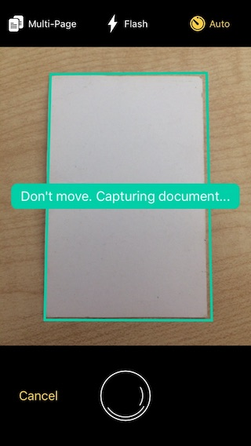
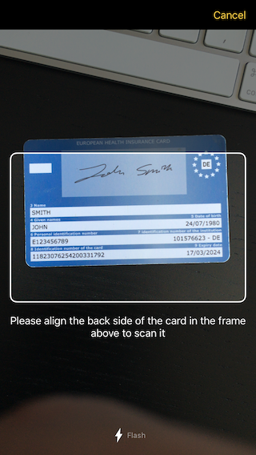

Scanbot SDK React Native Module
This documentation is for the latest release version of the
Scanbot SDK React Native Module (react-native-scanbot-sdk@4.x).
Introduction
The Scanbot SDK brings scanning and document creation capabilities to your mobile apps. It contains various modules that are part of different license packages. For more details visit our website
This module provides implementations of Scanbot SDK for iOS and Android.
Following Package I + II functionality is covered by this module:
Package I
- Document Scanning with User Guidance
- Cropping UI
- Document Detection
- Image Filters
- PDF Creation
- Barcode and QR Code Scanning
Package II
- OCR
- MRZ Scanning
Package III
- ID Card Scanning
- EHIC Scanning (European Health Insurance Card Scanner)
Requirements
Dev Tools
- Node.js, npm
- For Android apps:
- Android SDK (API Level 21+), Platforms and Developer Tools
- For iOS apps:
- Mac OS X with latest Xcode and Command Line Tools
- CocoaPods
React Native Framework
- React Native 0.60+
Mobile Platforms
- Android 5.0 (API Level 21) and higher
- iOS 11 and higher
Please note:
- The Scanbot SDK module is available only for Android and iOS
- The module does not work on other platforms like Windows Phone, Desktop or WebApps
- We don’t support rooted Android devices (custom ROMs)
Mobile Devices
- Smartphones and Tablets with a rear-facing camera with autofocus
- Supported CPUs and Architectures:
- Android:
armeabi-v7, arm64-v8a, x86, x86_64 - iOS:
arm64for physical devices andx86_64for simulators
- Android:
No Internet Connection Required
The Scanbot SDK works completely offline. It doesn’t even contain any networking code. This can easily be verified by routing all networking traffic coming from the app through a proxy. All data generated by the Scanbot SDK is only stored on the end users device and in absolutely no case ever transferred to a server / cloud service controlled by us. You as the customer will need to take care of uploading the scans / data to your backend, if desired.
Simulators / Emulators
While it is possible to test your App with the Scanbot SDK module on simulators/emulators, we strongly recommend to use real Android/iOS devices. Depending on the emulated Camera you may not be able to test/evaluate the full functionality of the Scanbot SDK module.
Example App
Check out our Example App on GitHub:
Installation
The Scanbot SDK module is available as npm package.
You can simply add it to your project by npm install:
npm install --save react-native-scanbot-sdk
React Native Autolinking
Since version 4.0 react-native-scanbot-sdk requires React Native v0.60 or higher, which supports the
Autolinking feature.
So “react-native link” should not be used anymore.
Please unlink the native dependencies of react-native-scanbot-sdk if you are migrating from a previous version
to react-native-scanbot-sdk@4.x.
Android Setup
Scanbot SDK Maven Repositories
This React Native module depends on the native Scanbot SDK for Android.
The Scanbot SDK for Android is distributed through our private Maven repositories.
Please add these repositories in your android/build.gradle file in the section allprojects > repositories:
allprojects {
repositories {
mavenLocal()
maven {
// All of React Native (JS, Obj-C sources, Android binaries) is installed from npm
url "$rootDir/../node_modules/react-native/android"
}
google()
jcenter()
// Scanbot SDK Maven repositories:
maven { url 'https://nexus.scanbot.io/nexus/content/repositories/releases/' }
maven { url 'https://nexus.scanbot.io/nexus/content/repositories/snapshots/' }
}
}
Add SDK Project Reference
As of react-native v0.62, Scanbot SDK reference needs to be included in your settings.gradle, as such:
include ':react-native-scanbot-sdk'
project(':react-native-scanbot-sdk').projectDir = new File(rootProject.projectDir, '../node_modules/react-native-scanbot-sdk/android/app')
Enable Multidex
Make sure you have enabled multidex
by setting multiDexEnabled to true in your app module-level build.gradle file:
android {
...
defaultConfig {
...
multiDexEnabled true
}
}
Also add the following config in your build.gradle to avoid conflicts with the lib filename libc++_shared.so,
which is used by React Native as well as by many other 3rd-party modules:
android {
...
packagingOptions {
pickFirst '**/libc++_shared.so'
}
}
Tuning the Android Manifest
Since your application will work with high-resolution images,
it is strongly recommended to add the property android:largeHeap="true"
in the <application> element of your android/app/src/main/AndroidManifest.xml file,
especially for Android <= 7.x.
Processing hi-res images is a memory intensive task and this property will ensure
your app has enough heap allocated to avoid OutOfMemoryError exceptions.
<application ... android:largeHeap="true">
...
</application>
iOS Setup
Please note that since version 4.0 of react-native-scanbot-sdk
the iOS integration can be done only via CocoaPods.
In your ios/Podfile add the “RNScanbotSDK” pod:
pod 'RNScanbotSDK', :podspec => '../node_modules/react-native-scanbot-sdk/react-native-scanbot-sdk.podspec'
As of ScanbotSDK v4.1.0, the .podspec has been renamed:
pod 'RNScanbotSDK', :podspec => '../node_modules/react-native-scanbot-sdk/RNScanbotSDK.podspec'
The pod RNScanbotSDK defines a dependency to the pod ScanbotSDK which is the native Scanbot SDK iOS Framework.
If you need features like OCR or MRZ Scanner, you have to add the corresponding additional bundles by specifying them by following subspecs:
OCR: for the default OCR data bundleScanbotSDKOCRData.bundlecontaining default language files for DE and ENMRZ: for the MRZ Scanner data bundleScanbotSDKMRZData.bundleMLDETECT: For ML-based Document detectionALL: for all available bundles (default, currently OCR + MRZ)
Example for MRZ subspecs/bundle:
pod 'RNScanbotSDK', :podspec => '../node_modules/react-native-scanbot-sdk/react-native-scanbot-sdk.podspec', :subspecs => ['MRZ']
As of ScanbotSDK v4.1.0, the .podspec has been renamed:
pod 'RNScanbotSDK', :podspec => '../node_modules/react-native-scanbot-sdk/RNScanbotSDK.podspec', :subspecs => ['MRZ']
NOTE!
As of v0.62 of react-native and v4.1.0 of react-native-scanbot-sdk, the above step is no longer necessary.
You do not need to manually modify your Podfile.
react-native resolves your native dependencies (.podspec) from the package name in your package.json file.
Run:
$ cd ios/
$ pod install --repo-update
That’s it, no manual linking required anymore! Just open
the Xcode workspace (.xcworkspace) and you should be able
to build the native Scanbot SDK linked via CocoaPods.
The following screenshot shows the proper setup of the pod RNScanbotSDK
with the resolved dependency to the pod ScanbotSDK
via CocoaPods using the subspec ALL:
{kind=link}
Permissions
In order to operate correctly an application that utilizes ScanbotSDK module must have all required permissions to your App. Here is a listing of those permissions:
Android (must be added in your android/app/src/main/AndroidManifest.xml file)
<uses-permission android:name="android.permission.CAMERA" />- This permission is used for the camera views.<uses-feature android:name="android.hardware.camera" />- Camera hardware features.
iOS (must be added in your Info.plist file)
NSCameraUsageDescription- “Privacy - Camera Usage Description”. As value describe why your app wants to access the device’s camera.
API Reference
ScanbotSdk- .initializeSDK -
function - .getLicenseInfo -
function - .detectDocument -
function - .rotateImage -
function - .applyImageFilter -
function - .createPDF -
function - .writeTIFF -
function - .getOCRConfigs -
function - .performOCR -
function - .createPage -
function - .setDocumentImage -
function - .detectDocumentOnPage -
function - .applyImageFilterOnPage -
function - .getFilteredDocumentPreviewUri -
function - .rotatePage -
function - .removePage -
function - .estimateBlur -
function - .cleanup -
function
- .initializeSDK -
ScanbotSdk.UI- .startDocumentScanner -
function - .startCroppingScreen -
function - .startMrzScanner -
function - .startEHICScanner -
function - .startBarcodeScanner -
function - .startBatchBarcodeScanner -
function - .startIdCardScanner -
function
- .startDocumentScanner -
- Constants
- DetectionResult -
string - ImageFilter -
string - OCROutputFormat -
string
- DetectionResult -
Getting Started
Initialize SDK
ScanbotSDK.initializeSDK(options): Promise
The Scanbot SDK must be initialized before usage. Make sure to run the initialization only once per app lifetime.
Example code for initialization:
import ScanbotSDK from 'react-native-scanbot-sdk';
async function initializeSDK() {
const options = {
licenseKey: '', // Optional license key (empty for trial mode)
loggingEnabled: true, // Consider switching logging OFF in production builds for security and performance reasons!
storageImageFormat: 'JPG', // Optional image format - JPG or PNG. Default is JPG.
storageImageQuality: 80, // Optional image JPG quality. Default is 80.
storageBaseDirectory: myCustomStoragePath(), // Optional custom storage path.
// The new and improved ML-based document detection is available from
// ScanbotSDK react-native 4.1.0 and requires iOS 11.2:
documentDetectorMode: 'ML_BASED'
};
try {
const result = await ScanbotSDK.initializeSDK(options);
// initialization succeeded
} catch (err) {
// initialization failed
}
}
License Key
In order to run the Scanbot SDK functionality within your production app, you have to purchase and use a valid Scanbot SDK license.
Each license key is valid only for a given app bundle identifier. The license also defines which modules you are allowed to use. The usage of unlicensed modules will log an error to the console and terminate the app. If your license has expired any calls of the Scanbot SDK will terminate your app.
Example code for defining and using the license key:
// Please note: this is just an example license key string (it's not a valid license)
const myLicenseKey =
"fXbN2PmyqEAZ+btdkSIS36TuX2j/EE5qxVNcZMXYErbLQ" +
"3OBnE10aOQxYI8L4UKwHiZ63jthvoFwUevttctBk0wVJ7Z" +
"+Psz3/Ry8w7pXvfpB1o+JrnzGGcfwBnRi/5raQ2THDeokR" +
"RB1keky2VBOFYbCfYt3Hqms5txF2z70PE/SBTMTIVuxL7q" +
"1xcHDHclbEBriDtrHw8Pmhh9FqTg/r/4kRN/oEX37QGp+Y" +
"3ogwIBbSmV+Cv+VuwtI31uXY3/GkyN/pSJZspIl+exwQDv" +
"O0O1/R/oAURpfM4ydaWReRJtjW8+b1r9rUgPERguaXfcse" +
"HlnclItgDfBHzUUFJJU/g==\nU2NhbmJvdFNESwppby5zY" +
"2FuYm90LmRlbW8ueGFtYXJpbgoxNDg0NjExMTk5CjcxNjc" +
"KMw==\n";
const options = {
licenseKey: myLicenseKey,
loggingEnabled: true
}
const result = await ScanbotSDK.initializeSDK(options);
Trial License
The Scanbot SDK will run without a license for one minute per session! To get an unrestricted “no-strings-attached” 30 day trial license, please submit the Trial License Form on our website.
Please kindly note that a trial license can only be used in a development and staging environment. You are not allowed to publish your app to the App Store, Play Store or any 3rd party Android App Store with a trial license.
Purchase a Production License
In order to purchase a Scanbot SDK license please reach out to our sales experts via sdk@scanbot.io.
App Identifier
Every app has a unique identifier (sometimes also known as “bundle identifier” or “application ID”). Your license will be bound to this identifier. To request a trial license or purchase a production license, you have to provide us the bundle identifier of your app.
Logging
When initializing the Scanbot SDK you can enable logging of the SDK. By default logging is disabled.
const options = {
licenseKey: myLicenseKey,
loggingEnabled: true
}
const promise = ScanbotSDK.initializeSDK(options);
On Android logs are printed into LogCat as well as saved on the device.
You can find them in Environment.getExternalStorageDirectory()/debug_logs/[package_name].
Usually it is /sdcard/debug_logs/[package_name].
The easiest way to check the log outputs on Android is to use the
Android Debug Bridge (adb).
(e.g. $ adb -s <DEVICE_ID> shell "logcat")
On iOS all logs are printed to the console. Please use Xcode to check the log outputs.
You can also see application logs in the terminal by issuing react-native log-android or react-native log-ios.
There will be no log files created by the Scanbot SDK module.
Please note: While it may be useful for development, consider switching logging OFF in production builds for security and performance reasons!
Image Quality / Compression
initializeSDK can take two more optional parameters that
specify the image storage format and compression for generated JPEG images,
created by the Document Scanner, Cropping UI, as well as all image manipulation functions like applyImageFilter.
const options = {
storageImageFormat: 'JPG',
storageImageQuality: 80,
};
ScanbotSDK.initializeSDK(options);
storageImageQuality- defines the quality factor of JPEG images. The value must be between 1 and 100, where 100 means maximum quality and largest file size. This parameter is optional. The default value is 80 which is a good compromise between image file size and document legibility.storageImageFormat- either'JPG'or'PNG'. The default value is'JPG'.
Updating the License in Production Apps
To renew an expired license or extend a valid license with new Scanbot SDK features, you will have to update your app in the App Store or Play Store. The expiration date and the feature list of a license are an encrypted data part of the license key string. Which means a renewal or extension of a license will cause a new license key string to be generated.
License Check in Production Apps
If your Scanbot SDK license has expired,
any call of the Scanbot SDK API will terminate your app or result in an error.
To prevent this you should always check for license expiration during the runtime
by calling the method ScanbotSDK.getLicenseInfo().
If the result of the isLicenseValid property returns false,
you should disable any usage of the Scanbot SDK functions or UI components in your app.
We highly recommend to implement a suitable handling of this case in your app!
ScanbotSDK.getLicenseInfo(): Promise<LicenseInfo>
export interface LicenseInfo {
isLicenseValid: boolean;
licenseStatus: LicenseStatus;
licenseExpirationDate?: number;
}
Example code for checking the license status:
async function() {
const info = await ScanbotSDK.getLicenseInfo();
if (info.isLicenseValid) {
// Making your calls of the Scanbot SDK API is safe now.
// e.g. startDocumentScanner(..), applyImageFilter(..), etc
}
}
Storage
Since version 3.0 of this Module the native Scanbot SDKs use the internal and secure storage locations for all produced files (JPG, PNG, PDF, TIFF, etc) by default.
-
On Android all files will be stored in the internal files directory of your application. No permissions are required for your app to read or write files in this directory.
-
On iOS all files will be stored in the Application Support folder of your application.
Customize Storage Location
It is strongly recommended to use the default storage location.
However, you can overwrite the storage directory on initialization of the SDK Module.
The initializeSdk method can take an optional parameter storageBaseDirectory to set a custom storage location.
const options = {
storageBaseDirectory: 'file:///some/custom/storage-dir/',
...
};
const result = await ScanbotSDK.initializeSDK(options);
The value of the storageBaseDirectory must be a file URL ('file:///...)
pointing to a valid platform-specific file system path.
If this directory does not exist yet, the SDK Module will try to create it.
To work with the file system we recommend the npm module
react-native-fs
For the full demo code please checkout our example app scanbot-sdk-example-react-native.
⚠️ Note: When overwriting the default storage location, make sure
- you have implemented a suitable storage permissions request handling on Android
- you fully understand the consequences regarding the accessibility (security) of the produced document files.
👉 For more details about the storage locations on Android and iOS please also see:
Storage Cleanup
There is no automatic file clean mechanism in this SDK Module, because only your App can decide when is the perfect time to remove the files produced by this SDK (images, PDFs, etc).
To avoid storage space issues caused by too many produced image files, it is strongly recommended to implement a suitable cleanup functionality based on the requirements of your app. This SDK Module provides the following helper methods to keep the storage clean:
- removePage method to delete a certain
Pageobject with all its files. - cleanup method to remove all generated files by this RN SDK Module (scanned and imported images, export files like PDF, TIFF, etc).
Ready-To-Use UI
Configuration
Settings controlling color are expected to be passed as strings in the '#RRGGBB' format.
Pages
The Scanbot SDK provides a ready-to-use UI for document scanning and cropping. Both components use the notion of a
‘page’ as a data model for the scanning and cropping activities. A Page object has the following fields:
interface Page {
pageId: string;
polygon: Point[];
detectionResult: DetectionStatus;
originalImageFileUri: string;
documentImageFileUri?: string;
originalPreviewImageFileUri: string;
documentPreviewImageFileUri?: string;
}
The fields are:
pageId- a string identifying the page in the internal page file storagepolygon- the page’s cropping polygon as calculated by a document detection operation or as set by the cropping UI. Modifying the polygon will change the polygon as shown in the cropping UI but will not automatically re-crop the original image.detectionResult- the detection result of the document detection operation that produced the page (either the document scanner ordetectDocument()).originalImageFileUri- file URI of the original imagedocumentImageFileUri- file URI of the cropped document image (if document detection was successful)originalPreviewImageFileUri- file URI of a screen-sized preview of the original imagedocumentPreviewImageFileUri- file URI of a screen-sized preview of the document image
Pages are stored in an internal page file storage, where the pageId serves as a name prefix
for the stored image files. Operations that modify pages work in-place.
That is, for example, rotatePage() overwrites the page’s image files with their rotated versions.
This behavior differs from the behavior of raw image functions like rotateImage(),
which always create a new file. All URI properties of a page have a ?minihash= query parameter
appended to them with the hash of a portion of the image file. Different images
will almost always have a different hash and therefore a different URI,
which will force the WebView to reload the page’s images when changed.
Document Scanner
ScanbotSdk.UI.startDocumentScanner(configuration: DocumentScannerConfiguration): Promise
Starts the ready-to-use Document Scanner for guided, automatic document scanning.

Result
The promise resolves to an object with the following properties:
status-'OK'if some pages were snapped,'CANCELED'if the user canceled the operation.pages- an array of pages. If multi-page mode is enabled, this array may contain more than one page. If multi-page mode is not enabled andstatusis'OK', this array contains one object.
Options:
All configuration options are optional.
interface DocumentScannerConfiguration {
/**
* The minimum score in percent (0 - 100) of the perspective distortion to accept a detected document.
* Default is 75.0.
*/
acceptedAngleScore: number,
/**
* The minimum document width or height in percent (0 - 100) of the screen size to accept a detected document.
* Default is 80.0.
*/
acceptedSizeScore: number,
/**
* Controls whether the auto-snapping toggle button is hidden or not.
*/
autoSnappingButtonHidden: boolean,
/**
* Title of the auto-snapping toggle button.
*/
autoSnappingButtonTitle: string,
/**
* When auto-snapping is enabled the document scanner will take a photo automatically
* when a document is detected, conditions are good and the auto-snapping time-out elapses. In this
* mode the user can still tap the shutter button to snap a document.
*/
autoSnappingEnabled: boolean,
/**
* Controls the auto-snapping speed. Sensitivity must be within the 0..1 range.
* A value of 1.0 triggers automatic capturing immediately, a value of 0.0 delays the automatic by 3 seconds.
* The default value is 0.66 (1 second).
*/
autoSnappingSensitivity: number,
/**
* The background color of the bottom shutter-bar.
*/
bottomBarBackgroundColor: string,
/**
* The color of the title of all buttons in the bottom shutter-bar (Cancel button, etc.),
* as well as the camera permission prompt button.
*/
bottomBarButtonsColor: string,
/**
* The color of the camera background (relevant only when the camera preview mode is CameraPreviewMode.FIT_IN).
*/
cameraBackgroundColor: string,
/**
* Preview mode of the camera: Fit-In or Fill-In.
* Optional, default is Fit-In.
*/
cameraPreviewMode: CameraPreviewMode,
/**
* Title of the cancel button.
*/
cancelButtonTitle: string,
/**
* Title of the button that opens the screen where the user can allow
* the usage of the camera by the app.
*/
enableCameraButtonTitle: string,
/**
* Text that will be displayed when the app
* is not allowed to use the camera, prompting the user
* to enable the usage of the camera.
*/
enableCameraExplanationText: string,
/**
* Controls whether the flash toggle button is hidden or not.
*/
flashButtonHidden: boolean,
/**
* Title of the flash toggle button.
*/
flashButtonTitle: string,
/**
* Controls whether the flash should be initially enabled.
* The default value is FALSE.
*/
flashEnabled: boolean,
flashImageButtonHidden: boolean,
/**
* Sets whether to ignore the OK_BUT_BAD_ASPECT_RATIO detection status.
* By default BadAspectRatio is not ignored.
*/
ignoreBadAspectRatio: boolean,
/**
* The image scaling factor. The factor must be within the 0..1 range.
* A factor of 1 means that the resulting images retain their original size.
* When the factor is less than 1, resulting images will be made smaller by that factor.
* By default the scale is 1.
*/
imageScale: number,
/**
* Controls whether the multi-page toggle button is hidden or not.
*/
multiPageButtonHidden: boolean,
/**
* Title of the multi-page mode toggle button.
*/
multiPageButtonTitle: string,
/**
* Controls multi-page mode. When enabled, the user can take multiple document photos before
* closing the screen by tapping the page counter button. When disabled, the screen will be
* closed immediately after the first document photo is made.
* The default value is FALSE.
*/
multiPageEnabled: boolean,
/**
* Orientation lock mode of the camera: PORTRAIT or LANDSCAPE.
* By default the camera orientation is not locked.
*/
orientationLockMode: CameraOrientationMode,
/**
* Title suffix of the button that finishes the document scanning when multi-page scanning is enabled.
* The button's title has the format "%d Pages", where %d shows the number of images captured up to now and the
* suffix "Pages" is set using this method.
*/
pageCounterButtonTitle: string,
/**
* The background color of the detected document outline when the document's angle, size or aspect ratio
* is not yet sufficiently good.
* (All net.doo.snap.lib.detector.DetectionResult with OK_BUT_XXX).
*/
polygonBackgroundColor: string,
/**
* The background color of the detected document outline when we are ready to snap OK.
*/
polygonBackgroundColorOK: string,
/**
* The color of the detected document outline when the document's angle, size or aspect ratio
* is not yet sufficiently good.
* (All detection statuses in net.doo.snap.lib.detector.DetectionResult that have the OK_BUT_XXX prefix).
*/
polygonColor: string,
/**
* The color of the detected document outline when we are ready to snap OK.
*/
polygonColorOK: string,
/**
* Width of the detected document outline.
*/
polygonLineWidth: number,
/**
* The foreground color of the shutter button in auto-snapping mode.
*/
shutterButtonAutoInnerColor: string,
/**
* The background color of the shutter button in auto-snapping mode.
*/
shutterButtonAutoOuterColor: string,
shutterButtonIndicatorColor: string,
/**
* The foreground color of the shutter button in manual mode.
*/
shutterButtonManualInnerColor: string,
/**
* The background color of the shutter button in manual mode.
*/
shutterButtonManualOuterColor: string,
/**
* Text hint that will be shown when the current detection status is OK_BUT_BAD_ANGLES
*/
textHintBadAngles: string,
/**
* Text hint that will be shown when the current detection status is OK_BUT_BAD_ASPECT_RATIO
*/
textHintBadAspectRatio: string,
/**
* Text hint that will be shown when the current detection status is ERROR_NOTHING_DETECTED
*/
textHintNothingDetected: string,
/**
* Text hint that will be shown when the current detection status is OK
*/
textHintOK: string,
/**
* Text hint that will be shown when the current detection status is ERROR_TOO_DARK
*/
textHintTooDark: string,
/**
* Text hint that will be shown when the current detection status is ERROR_TOO_NOISY
*/
textHintTooNoisy: string,
/**
* Text hint that will be shown when the current detection status is OK_BUT_TOO_SMALL
*/
textHintTooSmall: string,
/**
* The background color of the top toolbar.
*/
topBarBackgroundColor: string,
/**
* The color of all active toggle buttons in the toolbar.
*/
topBarButtonsActiveColor: string,
/**
* The color of all inactive toggle buttons in the toolbar.
*/
topBarButtonsInactiveColor: string,
/**
* The background color of the user guidance hints.
*/
userGuidanceBackgroundColor: string,
/**
* The text color of the user guidance hints.
*/
userGuidanceTextColor: string,
/**
* Limits the maximum size of the document image. If width or height are zero,
* this property is effectively ignored.
* Where Size is
* {
* width: number;
* height: number;
* }
*/
documentImageSizeLimit: Size,
/**
* Hides the shutter button if set to TRUE. Shows it otherwise. Defaults to FALSE.
* If set to TRUE, auto-snapping is enabled and the property
* autoSnappingEnabled of the behaviour configuration will
* have no effect.
* Also the auto-snapping button will be hidden.
*/
shutterButtonHidden: boolean,
/**
* The text being displayed on the user-guidance label, when the scanners energy saver is activated.
* iOS only.
*/
textHintEnergySavingActive: string,
/**
* Maximum number of pages to scan. Ignored when set to null, or when `multiPageEnabled` is FALSE.
* Default value is null.
*/
maxNumberOfPages?: number,
};
Cropping UI
ScanbotSdk.UI.startCroppingScreen(page: Page, options: CroppingScreenConfiguration)
The Cropping UI provides functionality for manual cropping and rotation of an image. It uses the edge detection algorithm of the Scanbot SDK and contains some smart UI elements like magnetic lines and a magnifier.

Returns
The promise resolves to an object with the following properties:
status-'OK'if the user modified the page,'CANCELED'if the user canceled the operation.page- the cropped page.
Options:
The cropping UI requires a page object. A page object can be initially created using the Document Scanner or createPage().
All configuration settings are optional.
export interface CroppingScreenConfiguration
{
/**
* String being displayed as a hint. Empty by default.
*/
hintTitle?: string;
/**
* Text color of the hint title.
*/
hintTitleColor?: string;
/**
* Background color of the main screen.
*/
backgroundColor?: string;
/**
* Background color of the bottom toolbar.
*/
bottomBarBackgroundColor?: string;
/**
* Color of the titles of all buttons in the bottom toolbar (Rotate button).
*/
bottomBarButtonsColor?: string;
/**
* Title of the cancel button.
*/
cancelButtonTitle?: string;
/**
* Title of the Done button.
*/
doneButtonTitle?: string;
/**
* Default color of the cropping outline.
*/
polygonColor?: string;
/**
* Outline color of magnetically snapped edges.
*/
polygonColorMagnetic?: string;
/**
* Width of the cropping outline.
*/
polygonLineWidth?: number;
/**
* Title of the Rotate button.
*/
rotateButtonTitle?: string;
titleColor?: string;
/**
* Background color of the top toolbar.
*/
topBarBackgroundColor?: string;
/**
* Color of the titles of all buttons in the top toolbar (Cancel and Done buttons).
*/
topBarButtonsColor?: string;
topBarTitle?: string;
/**
* Title of the Detect button.
*/
detectButtonTitle?: string;
/**
* Title of the Reset button.
*/
resetButtonTitle?: string;
/**
* Controls whether the Rotate button is hidden or not.
*/
rotateButtonHidden?: boolean;
/**
* Controls whether the Detect/Reset button is hidden or not.
*/
detectResetButtonHidden?: boolean;
/**
* UI orientation lock mode: PORTRAIT, LANDSCAPE, etc.
* By default the UI is not locked.
*/
orientationLockMode?: UIOrientationMode;
}
Barcode and QR Code Scanning UI
ScanbotSdk.UI.startBarcodeScanner(configuration: BarcodeScannerConfiguration): Promise
Opens a Scanning UI for barcodes and QR codes.

Returns
The promise resolves to an object with the following properties:
status-'OK'if the user modified the ,'CANCELED'if the user canceled the operation.format- Format of detected barcode/QR code (e.g.CODE_128,EAN_13,QR_CODE, etc).value- Text value of detected barcode/QR code.
Options:
All settings are optional.
configuration.barcodeFormats is an optional array of barcode formats
that act as a detection filter. By default all supported formats will be detected.
var options = {
/**
* Allowed orientations for automatic interface rotations. *
*/
allowedInterfaceOrientations: UIInterfaceOrientationMask;
/**
* Foreground color of the flash button when flash is on.
*/
bottomButtonsActiveColor: string;
/**
* Foreground color of the flash button when flash is off.
*/
bottomButtonsInactiveColor: string;
/**
* Background color of the detection overlay.
*/
cameraOverlayColor: string;
/**
* Whether the cancel button is hidden or not.
*/
cancelButtonHidden: boolean;
/**
* String being displayed on the cancel button.
*/
cancelButtonTitle: string;
/**
* Relative height of finder frame. Together with finderWidth it defines the aspect ratio,
* which is used to build actual finder frame. Default is 1.
* For example if finderWidth and finderHeight both equals 1 - it will make a square frame,
* which is good for QR capturing.
*/
finderHeight: number;
/**
* Foreground color of the detection overlay.
*/
finderLineColor: string;
/**
* Width of finder frame border. Default is 2.
*/
finderLineWidth: number;
/**
* String being displayed as description.
*/
finderTextHint: string;
/**
* Foreground color of the description label.
*/
finderTextHintColor: string;
/**
* Relative width of finder frame. Together with finderHeight it defines the aspect ratio,
* which is used to build actual finder frame. Default is 1.
* For example if finderWidth and finderHeight both equals 1 - it will make a square frame,
* which is good for QR capturing.
*/
finderWidth: number;
/**
* String being displayed on the flash button.
*/
flashButtonTitle: string;
/**
* Whether flash is toggled on or off.
*/
flashEnabled: boolean;
/**
* Whether scanner screen should make a sound on successful barcode or MRZ detection.
*/
successBeepEnabled: boolean;
/**
* Background color of the top bar.
*/
topBarBackgroundColor: string;
/**
* Foreground color of the cancel button.
*/
topBarButtonsColor: string;
/**
* Accepted barcode formats
*/
barcodeFormats: BarcodeFormat[];
}
Batch Barcode and QR Code Scanning UI
ScanbotSdk.UI.startBatchBarcodeScanner(configuration: BatchBarcodeScannerConfiguration): Promise
Opens a Scanning UI to scan multiple barcodes and QR-codes in a row.
Result:
The promise resolves to a result object with the following properties:
result.status-'OK'If there is at least one barcode in the result list available,'CANCELED'if the user canceled the operation (tapped on the “cancel” button).result.barcodes[]- Array of scanned barcodes/QR codes.result.barcodes[n].type- Format of detected barcode/QR code (e.g.CODE_128,EAN_13,QR_CODE, etc).result.barcodes[n].text- Text value of detected and decoded barcode/QR code.
Options:
All configuration options are optional.
uiConfigs.barcodeFormats is an optional array of barcode formats
that act as a detection filter. By default all supported formats will be detected.
export interface BatchBarcodeScannerConfiguration
{
/**
* Allowed orientations for automatic interface rotations. *
*/
allowedInterfaceOrientations?: UIInterfaceOrientationMask;
/**
* String used for displaying amount of scanned barcodes. Use %d for number formatting symbol.
*/
barcodesCountText?: string;
/**
* Text color of the barcodes count label.
*/
barcodesCountTextColor?: string;
/**
* Background color of the detection overlay.
*/
cameraOverlayColor?: string;
/**
* Whether the cancel button is hidden or not.
*/
cancelButtonHidden?: boolean;
/**
* String being displayed on the cancel button.
*/
cancelButtonTitle?: string;
/**
* String being displayed on the clear button.
*/
clearButtonTitle?: string;
/**
* String being displayed on the delete button.
*/
deleteButtonTitle?: string;
/**
* Foreground color of the top bar buttons on the details screen.
*/
detailsActionColor?: string;
/**
* Background color of the details screen.
*/
detailsBackgroundColor?: string;
/**
* Text color in the details barcodes list. Also affects image background, separator and progress spinner.
*/
detailsPrimaryColor?: string;
/**
* String used to show process of fetching mapped data for barcodes.
*/
fetchingStateText?: string;
/**
* Aspect ratio of finder frame (width \ height), which is used to build actual finder frame.
* Default is 1 - it is a square frame, which is good for QR capturing.
*/
finderAspectRatio?: FinderAspectRatio;
/**
* Foreground color of the detection overlay.
*/
finderLineColor?: string;
/**
* Width of finder frame border. Default is 2.
*/
finderLineWidth?: number;
/**
* String being displayed as description.
*/
finderTextHint?: string;
/**
* Foreground color of the description label.
*/
finderTextHintColor?: string;
/**
* Whether flash is toggled on or off.
*/
flashEnabled?: boolean;
/**
* String to show that no barcodes were scanned yet.
*/
noBarcodesTitle?: string;
/**
* Enables or disables the barcode detection.
*/
recognitionEnabled?: boolean;
/**
* String being displayed on the submit button.
*/
submitButtonTitle?: string;
/**
* Whether scanner screen should make a sound on successful barcode or MRZ detection.
*/
successBeepEnabled?: boolean;
/**
* Background color of the top bar.
*/
topBarBackgroundColor?: string;
/**
* Foreground color of the top bar buttons on the scanning screen.
*/
topBarButtonsColor?: string;
/**
* Foreground color of the flash button when flash is off.
*/
topBarButtonsInactiveColor?: string;
/**
* Accepted barcode formats
*/
barcodeFormats?: BarcodeFormat[];
}
ID Card Scanning UI
ScanbotSdk.UI.startIdCardScanner(configuration: IdCardScannerConfiguration): Promise
Opens a Scanning UI to scan ID Cards. The scanner detects and recognizes ID cards or passports on video frames and extracts the data fields, like names, dates, photo, signature and machine readable zones (MRZ).
Note: This feature is currently limited to German ID cards and passports.
Result:
The promise resolves to a result object with the following properties:
result.status-'OK'if detection was successful.'CANCELED'if the user canceled the operation (tapped on the “cancel” button).result.idresult.surnameresult.givenNamesresult.birthDateresult.nationalityresult.expiryDateresult.mrzresult.photoImageUriresult.signatureImageUri
And additionally, depending on the type of card, the following properties:
result.birthplaceresult.issueDateresult.issuingAuthorityresult.addressresult.eyeColorresult.heightresult.pinresult.pseudonymresult.countryCoderesult.genderresult.maidenNameresult.passportType
Options:
All configuration options are optional.
/**
* Allowed orientations for automatic interface rotations. *
*/
allowedInterfaceOrientations?: UIInterfaceOrientationMask;
/**
* Background color of the detection overlay.
*/
cameraOverlayColor?: string;
/**
* Whether the cancel button is hidden or not.
*/
cancelButtonHidden?: boolean;
/**
* String being displayed on the cancel button.
*/
cancelButtonTitle?: string;
/**
* String being displayed on the clear button.
*/
clearButtonTitle?: string;
/**
* String that shows average confidence value of scanned card. Use %li as number formatting symbol.
*/
confidenceValue?: string;
/**
* Foreground color of the top bar buttons on the details screen.
*/
detailsActionColor?: string;
/**
* Background color of the details screen.
*/
detailsBackgroundColor?: string;
/**
* Text color in the details list. Also affects image background and separator.
*/
detailsPrimaryColor?: string;
/**
* A title for address field in details screen.
*/
fieldAddressTitle?: string;
/**
* A title for birth date field in details screen.
*/
fieldBirthDateTitle?: string;
/**
* A title for birth place field in details screen.
*/
fieldBirthPlaceTitle?: string;
/**
* Color of confidence value label background in details screen, when the field confidence level is high.
*/
fieldConfidenceHighColor?: string;
/**
* Color of confidence value label background in details screen, when the field confidence level is low.
*/
fieldConfidenceLowColor?: string;
/**
* Color of confidence value label background in details screen, when the field confidence level is moderate.
*/
fieldConfidenceModerateColor?: string;
/**
* Color of confidence value label text in details.
*/
fieldConfidenceTextColor?: string;
/**
* A title for country code field in details screen.
*/
fieldCountryCodeTitle?: string;
/**
* A title for expiry date field in details screen.
*/
fieldExpiryDateTitle?: string;
/**
* A title for eye color field in details screen.
*/
fieldEyeColorTitle?: string;
/**
* A title for gender field in details screen.
*/
fieldGenderTitle?: string;
/**
* A title for given names field in details screen.
*/
fieldGivenNamesTitle?: string;
/**
* A title for height field in details screen.
*/
fieldHeightTitle?: string;
/**
* A title for id field in details screen.
*/
fieldIDTitle?: string;
/**
* A title for issuing date field in details screen.
*/
fieldIssueDateTitle?: string;
/**
* A title for issuing authority field in details screen.
*/
fieldIssuingAuthorityTitle?: string;
/**
* A title for maiden name field in details screen.
*/
fieldMaidenNameTitle?: string;
/**
* A title for machine readable zone field in details screen.
*/
fieldMRZTitle?: string;
/**
* A title for nationality field in details screen.
*/
fieldNationalityTitle?: string;
/**
* A title for passport type field in details screen.
*/
fieldPassportTypeTitle?: string;
/**
* A title for photo field in details screen.
*/
fieldPhotoTitle?: string;
/**
* A title for PIN field in details screen.
*/
fieldPINTitle?: string;
/**
* A title for pseudonym field in details screen.
*/
fieldPseudonymTitle?: string;
/**
* String used for displaying amount of detected fields. Use %li for number formatting symbol.
*/
fieldsCountText?: string;
/**
* Text color of the fields count label.
*/
fieldsCountTextColor?: string;
/**
* A title for signature field in details screen.
*/
fieldSignatureTitle?: string;
/**
* A title for surname field in details screen.
*/
fieldSurnameTitle?: string;
/**
* Foreground color of the detection overlay.
*/
finderLineColor?: string;
/**
* Width of finder frame border. Default is 2.
*/
finderLineWidth?: number;
/**
* Whether the torch light is toggled on or off.
*/
flashEnabled?: boolean;
/**
* A title to show image content.
*/
imageTitle?: string;
/**
* String that notifies that nothing was scanned yet.
*/
noDataTitle?: string;
/**
* String that asks user to scan back side of a card.
*/
scanBackSideTitle?: string;
/**
* String that asks user to scan front side of a card.
*/
scanFrontSideTitle?: string;
/**
* String that notifies that both sides of card are scanned.
*/
scannedEverythingTitle?: string;
/**
* Defines, if photo image should be stored in internal storage (SBSDKUIIDCardStorage) on disk.
*/
shouldSavePhotoImageInStorage?: boolean;
/**
* Defines, if signature image should be stored in internal storage (SBSDKUIIDCardStorage) on disk.
*/
shouldSaveSignatureImageInStorage?: boolean;
/**
* String that asks user to start scanning a card.
*/
startScanningTitle?: string;
/**
* String being displayed on the submit button.
*/
submitButtonTitle?: string;
/**
* Color of tip background on scanning screen.
*/
tipBackgroundColor?: string;
/**
* Color of tip text on scanning screen.
*/
tipTextColor?: string;
/**
* Background color of the top bar.
*/
topBarBackgroundColor?: string;
/**
* Foreground color of the top bar buttons on the scanning screen.
*/
topBarButtonsColor?: string;
/**
* Foreground color of the flash button when flash is off.
*/
topBarButtonsInactiveColor?: string;
Machine-readable Zone Scanner (MRZ Scanner)
ScanbotSdk.UI.startMrzScanner(configuration: MrzScannerConfiguration)
Opens a Scanner for machine-readable zones.

Returns
The promise resolves to an object with the following properties:
status-'OK'if the user modified the ,'CANCELED'if the user canceled the operation.fields- an array of MRZ fields. Each field is an object with the following properties:field.name- the field typefield.value- the value of the field.field.confidence- confidence in the accuracy ofvalue
Options:
The finder window must have a width-to-height of 5, otherwise the detection process will fail. All other settings are optional.
export interface MrzScannerConfiguration
{
bottomButtonsActiveColor?: string;
bottomButtonsInactiveColor?: string;
/**
* Background color outside of the finder window.
*/
cameraOverlayColor?: string;
/**
* Title of the cancel button.
*/
cancelButtonTitle?: string;
/**
* Title of the button that opens the screen where the user can allow
* the usage of the camera by the app.
*/
enableCameraButtonTitle?: string;
/**
* Text that will be displayed when the app
* is not allowed to use the camera, prompting the user
* to enable the usage of the camera.
*/
enableCameraExplanationText?: string;
/**
* Height of the finder window in pixels.
*/
finderHeight?: number;
/**
* Color of the finder window's outline.
*/
finderLineColor?: string;
/**
* Thickness of the finder window's outline.
*/
finderLineWidth?: number;
/**
* Text hint shown under the finder window.
*/
finderTextHint?: string;
/**
* Color of the text hint under the finder window.
*/
finderTextHintColor?: string;
/**
* Width of the finder window in pixels.
*/
finderWidth?: number;
flashButtonTitle?: string;
/**
* Controls whether the flash should be initially enabled.
* The default value is FALSE.
*/
flashEnabled?: boolean;
/**
* Orientation lock mode of the camera: PORTRAIT or LANDSCAPE.
* By default the camera orientation is not locked.
*/
orientationLockMode?: CameraOrientationMode;
/**
* Controls whether to play a beep sound after a successful detection.
* Default value is TRUE.
*/
successBeepEnabled?: boolean;
/**
* Background color of the top toolbar.
*/
topBarBackgroundColor?: string;
/**
* Color of the titles of all buttons in the top toolbar.
*/
topBarButtonsColor?: string;
}
European Health Insurance Card Scanner (EHIC Scanner)
ScanbotSdk.UI.startEHICScanner(configuration: HealthInsuranceCardScannerConfiguration)
Opens a Scanner for European Health Insurance Cards

Options:
export interface HealthInsuranceCardScannerConfiguration
{
/**
* Allowed orientations for automatic interface rotations. *
*/
allowedInterfaceOrientations?: UIInterfaceOrientationMask;
/**
* Foreground color of the flash button when flash is on.
*/
bottomButtonsActiveColor?: string;
/**
* Foreground color of the flash button when flash is off.
*/
bottomButtonsInactiveColor?: string;
/**
* Background color of the detection overlay.
*/
cameraOverlayColor?: string;
/**
* Whether the cancel button is hidden or not.
*/
cancelButtonHidden?: boolean;
/**
* String being displayed on the cancel button.
*/
cancelButtonTitle?: string;
/**
* The receivers delegate.
*/
delegate?: any;
/**
* String being displayed when health insurance card was not found.
*/
detectionStatusFailedDetectionText?: string;
/**
* String being displayed when health insurance card was found but not recognized.
*/
detectionStatusFailedValidationText?: string;
/**
* String being displayed when health insurance card was found and recognized.
*/
detectionStatusSuccessText?: string;
/**
* Foreground color of the detection overlay.
*/
finderLineColor?: string;
/**
* Width of finder frame border. Default is 2.
*/
finderLineWidth?: number;
/**
* String being displayed as description.
*/
finderTextHint?: string;
/**
* Foreground color of the description label.
*/
finderTextHintColor?: string;
/**
* String being displayed on the flash button.
*/
flashButtonTitle?: string;
/**
* Whether flash is toggled on or off.
*/
flashEnabled?: boolean;
/**
* Enables or disables the machine readable zones detection.
*/
recognitionEnabled?: boolean;
/**
* Background color of the top bar.
*/
topBarBackgroundColor?: string;
/**
* Foreground color of the cancel button.
*/
topBarButtonsColor?: string;
/**
* The type of health insurance card validation.
*/
validationType?: HealthInsuranceCardValidationType;
}
Returns
The promise resolves to an object with the following properties:
status-'OK'if the user modified the ,'CANCELED'if the user canceled the operation.fields- an array of MRZ fields. Each field is an object with the following properties:field.type- the field typefield.value- the value of the field.field.confidence- confidence in the accuracy ofvalue
Page Operations
ScanbotSdk.createPage(imageUri: string): Promise<Page>
Creates a page from an image (presumably the image of an uncropped document).
Returns
The promise resolves to a page object. As the page hasn’t been cropped yet,
the documentImageFileUri and documentPreviewImageFileUri properties will be empty.
ScanbotSdk.setDocumentImage(page: Page, imageUri: string): Promise<Page>
Replaces the document image of a page. The passed image file will be copied into the internal page file storage.
page- the page to modify.imageUri- the URI of an image file with which to overwrite the page’s document image.
Returns
The promise resolves to a page object with the replaced document image.
ScanbotSdk.detectDocumentOnPage(page: Page): Promise<Page>
Runs document detection on the original image of the given page. The detection status, polygon and cropped document image are returned as a new page object in the returned promise.
ScanbotSdk.applyImageFilterOnPage(page: Page, filter: ImageFilter): Promise<Page>
Applies a filter on the unfiltered document image of a page.
page- the page to filter.imageFilter- the image filter to apply. The special value'NONE'will remove any previously applied filter from the document image.
ScanbotSdk.getFilteredDocumentPreviewUri(page: Page, imageFilter: ImageFilter): Promise<string>
Creates a preview image of a filter applied onto the document of a page. Does not modify the document image of the passed page.
page- the page for which to create a filtered document preview.imageFilter- the image filter to apply. The special value'NONE'will remove any previously applied filter from the document image.
Returns
A file URI with the preview image of the filtered document page.
ScanbotSdk.rotatePage(page: Page, times: number)
Rotates a page counter-clockwise in increments of 90 degrees.
page- the page to rotate.times- the number of counter-clockwise 90 degrees rotations to apply.
ScanbotSdk.removePage(page: Page): Promise
Removes all images of a page from the file storage.
Raw Image Operations
Document Detection
ScanbotSDK.detectDocument(imageFileUri: string): Promise
The Scanbot SDK uses digital image processing algorithms to find rectangular, document like, polygons in a digital image. This function applies edge dectection and processes all image operations in a background thread. There will be no UI started. As input a file URI of an image must be passed. The output contains the Detection Result as string and on success the cropped and perspective corrected image as a new file as well as the detected polygon. If there was no document detected the result enum provides the exact reason (noisy background, too dark, etc). The input image file will not be modified.
Returns
Returns object with the following fields
documentImageFileUri- File URI of the detected and cropped/warped document image as JPEG ('file:///...'). Maybenullif detection was not successfull.polygon- Contains the detected polygon as array. Maybe empty if detection was not successful.detectionResult- The Detection Result.
Rotate Image
ScanbotSDK.rotateImage(imageFileUri: string, degrees: number): Promise<string>
Rotates an image by given degrees value. As input a file URI of the image must be passed. The output image will be a new file. The input image file will not be modified.
Returns
Promise returning the file URI of the rotated result image.
Apply Image Filter
ScanbotSDK.applyImageFilter(imageFileUri: string, filter: ImageFilter): Promise<string>
Applies filter on an image. As input a file URI of the image must be passed. The output image will be a new file. The input image file will not be modified.
imageFileUri- file URI of the image to rotatefilter- ImageFilter string value.
Returns
File URI to the rotated image file.
Estimate Blur
ScanbotSdk.estimateBlur(options: {imageFileUri: string}): Promise
Estimates image blurriness. Less is sharper, more is blurred.
In board terms, consider blur values as follows:
0.0-0.3: This image isn’t blurry at all0.3-0.6: Somewhat blurry, should be ok0.6-1.0: I’m skeptical of the usefulness of the image
However, this isn’t that black and white. If a scanned document has a lot white background, that will be considered a very blurred image. It is therefore best to use blur estimator in conjunction with a finder view or on an already cropped document.
Options
var options = {
imageFileUri: 'file:///...',
};
Result
status-'OK'or'ERROR'in all error cases.message- Contains the error message as string.blur- numeric blue value, as explained above
PDF Creation
ScanbotSDK.createPDF(imageFileUris: string[], pageSize: PDFPageSize): Promise
The Scanbot SDK renders given images into a PDF document and stores it as a file. For each image a separate page is generated.
imageFileUris- Input images as an array of file URIs in proper order (image element 1 => page 1, etc).pageSize- PDFPageSize enum value to specify the output page size.
Returns
Returns an object with the following properties:
pdfFileUri- file URI with the path to the created PDF file
TIFF Creation
ScanbotSDK.writeTIFF(imageFileUris: string[], options): Promise
The Scanbot SDK renders the given images into a multi-page TIFF file and stores it as a file. For each image a separate page is generated.
imageFileUris- Input images as an array of file URIs in proper order (image element 1 => page 1, etc).options- An object containing some of the following properties:oneBitEncoded- if true, the input images will be binarized and the output TIFF file will be saved with one bit per pixel. If false, the input images will be stored as-is. The default value is false.dpi- Optional integer value for Dots Per Inches. The default value is200dpi.compression- Optional TIFF compression type. The default value depends on theoneBitEncodedflag.CCITT_T6(CCITT Fax 4) is the default value for binarized (oneBitEncoded=true) images. For color images (oneBitEncoded=false) the default value isADOBE_DEFLATE(ZIP).
Returns
Returns an object with the following properties:
tiffFileUri- file URI with the path to the created TIFF file
TIFF Compression Types
Following TIFF compression types are supported:
NONE: No compression.CCITT_T6: “CCITT Fax 4” compression type. Most common and recommended type for binarized (1-bit) black and white images to get achieve small TIFF file size.ADOBE_DEFLATE: “ZIP” compression type. Most common type for color images.CCITTRLECCITTFAX3CCITT_T4CCITTFAX4CCITTRLEWLZWPACKBITSDEFLATE
⚠️ Please note that the following compression types are only compatible for binarized images (1-bit encoded black & white images):
CCITTRLE, CCITTFAX3, CCITT_T4, CCITTFAX4, CCITT_T6, CCITTRLEW.
OCR - Optical Character Recognition
The Scanbot SDK RN Module provides a simple and convenient API to run Optical Character Recognition (OCR) on images. The OCR feature is a part of the Scanbot SDK Package II. It is based on the Tesseract OCR Engine with some modifications and enhancements.
Preconditions to achieve a good OCR result
Conditions while scanning
A perfect document for OCR is flat, straight, doesn’t show large shadows, folds, or any other objects that could distract it and is in the highest possible resolution. Our UI and algorithms do their best to help you meet these requirements. But as in photography, you can never fully get the image information back that was lost during the shot.
Languages
You can use multiple languages for OCR. But since the recognition of characters and words is a very complicated process, increasing the number of languages lowers the overall precision. With more languages, there are more results where the detected word could match. We suggest using as few languages as possible. Make sure that the language you’re trying to detect is supported by the SDK and added to the project.
Size and position
Put the document on a flat surface. Take the photo from straight above in parallel to the document to make sure that the perspective correction doesn’t need to fix much. The document should fill out the camera frame while still showing all of the text that needs to be recognized. This results in more pixels for each character that needs to be detected and hence, more detail. Skewed pages decrease the recognition quality.
Light and shadows
More ambient light is always better. The camera takes the shot at a lower ISO value, which results in less grainy photos. You should make sure that there are no visible shadows. If you have large shadows, it’s better to take the shot at an angle instead. That’s why we also don’t recommend to use the flashlight. From this low distance, it creates a light spot at the center of the document, which decreases the quality.
Focus
The document needs to be properly focused so that the characters are sharp and clear. The auto-focus of the camera works well if you meet the minimum required distance for the lens to be able to focus. Which usually starts at 5-10cm.
Typefaces
The OCR trained data is optimized for common serif and sans-serif font types. Decorative or script fonts decrease the quality of the detection a lot.
OCR Languages and Data Files
The OCR engine supports a wide variety of languages.
For each desired language a corresponding OCR training data file (.traineddata) must be provided.
Furthermore the special data file osd.traineddata is required (used for orientation and script detection).
The Scanbot SDK RN Module ships with no training data files by default to keep the package small in size. You have to download and provide the desired language files in your app.
Download and Provide OCR Language Files
You can find a list of all supported OCR languages and download links on the Tesseract wiki page.
Download
⚠️️️ Please choose and download the proper version of the language data files:
- For the latest version of Scanbot SDK RN Module 3.0.0 or newer - LSTM Data Files for Version 4.00.
- For the older versions of Scanbot SDK RN Module <= 2.x - Data Files for Version 3.04/3.05.
Provide
Option 1 - Provide the Language Files in the App Package:
Download the desired language files as well as the osd.traineddata file
and make sure they will be packaged in your app as:
- for Android: as assets in the sub-folder
ocr_blobs/ - for iOS: as resources in the sub-folder
ScanbotSDKOCRData.bundle/
Option 2 - Provide the Language Files On-Demand:
Alternatively, to keep the app package small, you can download and provide
the language files in your app on run-time.
Implement a suitable download functionality of the desired language files + osd.traineddata file and place them
in the languageDataPath directory which can be determined by the
getOCRConfigs method on run-time.
Language Codes
The Tesseract language data files are identified by a 3-letter language code. For example:
eng- Englishdeu- German- etc.
The Scanbot SDK API uses a 2-letter ISO code:
en- Englishde- German- etc.
Example:
If you want to perform OCR with languages English and German, you have to download and install the following data files:
eng.traineddata- language file for Englishdeu.traineddata- language file for Germanosd.traineddata- special data file for orientation and script detection
In the Scanbot SDK module then use languages: ["en", "de"].
OCR API
ScanbotSDK.performOCR(imageFileUris: string[], languages: string[], options): Promise
This function takes an array of images and performs Optical Character Recognition on each of the images. As result the recognized text can be returned as plain text or a composed PDF file containing selectable and searchable text.
imageFileUris- Input images as an array of file URIs in proper order (image element 1 => page 1, etc).languages- An array with OCR languages of the text to be recognized (e.g.["en", "de"]). The number of languages has an impact on the performance - the more languages, the slower the recognition process. The OCR operation will fail with an error if some of the specified languages are missing. Please use the getOCRConfigs function to make sure that desired languages are installed.options- an object containing some of the following properties:outputFormat- OcrOutputFormat enum value to specify the result.
Returns
The promise resolves to an object with the following properties:
plainText- Contains the recognized plain text if chosen.pdfFileUri- File URI of the composed PDF file ('file:///...') if chosen.jsonFileUri- File URI of OCR result JSON file ('file:///...') if chosen.
OCR Output Format Values
Following output formats can be specified for OCR result:
PLAIN_TEXT- Returns the recognized text as plain text only.PDF_FILE- Creates a composed PDF file containing selectable and searchable text.RESULT_JSON- Returns the OCR result as JSON file.FULL_OCR_RESULT- Full result: composed PDF file and recognized plain text.
Example of an OCR result as JSON:
{
"pages":[
{
"text":"Ut enim ad minim veniam, quis nostrud exercitation\nullamco laboris nisi ut aliquip ex ea commodo\nconsequat\n",
"words":[
{
"boundingBox":{
"y":0.46182008368200839,
"x":0.011823899371069183,
"width":0.040000000000000001,
"height":0.070606694560669453
},
"text":"Ut",
"confidence":96.546516418457031
},
{
"boundingBox":{
"y":0.46443514644351463,
"x":0.064402515723270437,
"width":0.091320754716981131,
"height":0.06903765690376569
},
"text":"enim",
"confidence":95.442947387695312
},
...
{
"boundingBox":{
"y":0.68462343096234313,
"x":0.010817610062893081,
"width":0.22213836477987423,
"height":0.13702928870292888
},
"text":"consequat",
"confidence":23.432151794433594
}
],
"lines":[
{
"boundingBox":{
"y":0.41684100418410042,
"x":0.011823899371069183,
"width":0.98037735849056606,
"height":0.14225941422594143
},
"text":"Ut enim ad minim veniam, quis nostrud exercitation\n",
"confidence":95.124320983886719
},
{
"boundingBox":{
"y":0.57112970711297073,
"x":0.011572327044025157,
"width":0.86792452830188682,
"height":0.1192468619246862
},
"text":"ullamco laboris nisi ut aliquip ex ea commodo\n",
"confidence":95.142372131347656
},
{
"boundingBox":{
"y":0.68462343096234313,
"x":0.010817610062893081,
"width":0.22213836477987423,
"height":0.13702928870292888
},
"text":"consequat\n",
"confidence":23.432151794433594
}
],
"paragraphs":[
{
"boundingBox":{
"y":0.41684100418410042,
"x":0.011320754716981131,
"width":0.98088050314465414,
"height":0.34884937238493724
},
"text":"Ut enim ad minim veniam, quis nostrud exercitation\nullamco laboris nisi ut aliquip ex ea commodo\nconsequat\n",
"confidence":90.915626525878906
}
]
}
...
]
}
ScanbotSDK.getOCRConfigs(): Promise
Use this function to get Scanbot SDK OCR properties of the current App installation.
Returns
Returns an object with the following properties:
languageDataPath- Contains absolute file URI of the directory where to place the OCR training data files. You have to copy the corresponding*.traineddatafiles into this directory. The directory is a part of your App. If you uninstall the app, this directory will also be removed.installedLanguages- Returns an array of current installed OCR languages (e.g.["en", "fr"]). The Scanbot SDK uses thelanguageDataPathdirectory to determine installed OCR languages.
Cleanup
ScanbotSDK.cleanup(): Promise
By calling ths function all temporary output files generated by the Scanbot SDK module will be deleted.
File Handling & Storage Concept
The Scanbot SDK module works with file URIs. That means all input and output files (images, PDFs, etc) are identified by a file URI.
Please note that a file URI is not just a file path : "file:///some/file/path/.." vs. "/some/file/path/.."
Examples of valid file URIs:
-
On Android:
file:///storage/emulated/0/Android/data/my.awesome.app/cache/sbsdk-temp/ce8de3c4-3c96-4ce1-b285-483d01e1dc9a.jpg -
On iOS:
file:///var/mobile/Containers/Data/Application/D2BF9FB2-1024-4418-99B2-3709AB2C171E/Documents/sbsdk-temp/05719BF8-63DB-4C8A-9A57-25B233AED33C.jpg
All output files generated by the Scanbot SDK module are a kind of temporary files. We recommend to copy, move or delete the files you get from callbacks to a appropriate storage place.
There is no automatic file clean mechanism in the module, because only your App can decide when is the perfect time to remove a file.
To avoid storage space issues caused by temporary files please implement a suitable hook for the cleanup function in your App.
Detection Result Values
OK- Document detection was successful. The detected contour looks like a valid document.OK_BUT_BAD_ANGLES- Document was detected, but the perspective is not perfect.OK_BUT_BAD_ASPECT_RATIO- Document was detected, but it has a wrong rotation relatively to the camera sensor.OK_BUT_TOO_SMALL- Document was detected, but it doesn’t fill the most best area in the image rect.ERROR_TOO_DARK- Document was not found, most likely because of bad lightning conditions.ERROR_TOO_NOISY- Document was not found, most likely because there is too much background noise (maybe too many other objects on the table, or background texture is not monotonic).ERROR_NOTHING_DETECTED- No document was found.
Image Filter Values
Supported image filters:
COLOR_ENHANCED- Optimizes colors, contrast and brightness.GRAYSCALE- Grayscale filterBINARIZED- Standard binarization filter with contrast optimization. Creates a grayscaled 8-bit image with mostly black or white pixels.COLOR_DOCUMENT- MagicColor filter. Fixes white-balance and cleans up the background.PURE_BINARIZED- A filter for binarizing an image. Creates an image with pixel values set to either pure black or pure white.BACKGROUND_CLEAN- Cleans up the background and tries to preserve photos within the image.BLACK_AND_WHITE- Black and white filter with background cleaning. Creates a grayscaled 8-bit image with mostly black or white pixels.OTSU_BINARIZATION- A filter for black and white conversion using OTSU binarization.DEEP_BINARIZATION- A filter for black and white conversion primary used for low-contrast documents.EDGE_HIGHLIGHT- A filter that enhances edges in low-contrast documents.LOW_LIGHT_BINARIZATION- Binarization filter primarily intended to use on low-contrast documents with hard shadows.LOW_LIGHT_BINARIZATION_2- Binarization filter primarily intended to use on low-contrast documents with hard shadows.
Page Size Values
PDFPageSize.A4: The page has the aspect ratio of the image, but is fitted into A4 size. Whether portrait or landscape depends on the images aspect ratio.PDFPageSize.FIXED_A4: The page has A4 size. The image is fitted and centered within the page. Whether portrait or landscape depends on the images aspect ratio.PDFPageSize.US_LETTER: The page has the aspect ratio of the image, but is fitted into US letter size. Whether portrait or landscape depends on the images aspect ratio.PDFPageSize.FIXED_US_LETTER: The page has US letter size. The image is fitted and centered within the page. Whether portrait or landscape depends on the images aspect ratio.PDFPageSize.AUTO: For each page the best matching format (A4 or US letter) is used. Whether portrait or landscape depends on the images aspect ratio.PDFPageSize.AUTO_LOCALE: Each page of the result PDF will be of US letter or A4 size depending on the current locale. Whether portrait or landscape depends on the images aspect ratio.PDFPageSize.FROM_IMAGE: Each page is as large as its image at 72 dpi.
Polygon
The Scanbot SDK polygon is a list with 4 float points (one for each corner). Each point has coordinates in range [0..1], representing position relative to image size. For instance, if a point has the coordinates (0.5, 0.5), it means that it is located exactly in the center of the image.
Example code of a detected polygon as JSON result:
"polygon": [
{"y":0.046, "x":0.13066667},
{"y":0.035, "x":0.91066664},
{"y":0.92, "x":0.9346667},
{"y":0.916, "x":0.10666667}
]
Building Production Apps
iOS
The Scanbot SDK iOS Framework (included in this React Native npm package) contains the most used architectures (arm64, armv7, x86_64, i386).
So you can run it on all most used iOS devices as well as on simulators during the development phase.
To be able to submit a production build to the App Store or a test build for TestFlight you have to remove (strip away)
the architectures x86_64 and i386 from the Scanbot SDK Framework. These architectures are only for simulators and not allowed
to submit to iTunes Connect.
To do so, we provide a script strip-SBSDK-Framework.sh which is part of the ScanbotSDK.framework and can be easily integrated in the build process.
This script removes the unnecessary architectures from the frameworks binary, code signs the framework and adds the crash symbols (dSYM) file to your apps archive.
The final package size (IPA) of your app will then be significantly smaller than a debug version used during the development phase.
To add this script in your build process, you will need to open the Xcode workspace .xcworkspace and apply a few changes there:
- Go to
TARGETSsettings and open the tabBuild Phases. Add a newRun Script Phasevia “+” button. - Adjust this
Run Script Phasewith the following script data:
Script code:
bash "${PODS_ROOT}/ScanbotSDK/ScanbotSDK.framework/strip-SBSDK-Framework.sh"
Script Input File:
${PODS_ROOT}/ScanbotSDK/ScanbotSDK.framework.dSYM
{kind=link}
Android
The Scanbot SDK uses native libraries under the hood and supports following ABIs:
armeabi-v7a, arm64-v8a, x86 and x86_64.
By default the native libraries of all these architectures will be included in the app package (APK),
which will result in a big APK file. Please consider to remove support for x86 and x86_64 architectures.
In most cases both “x86” architectures can be removed for the release (production) build, since they are only used on
emulators and on some rare devices with the Intel Atom architecture.
To exclude certain ABIs from the APK, use the abiFilters property in the Android Gradle settings of your project.
Please check and adjust the abiFilters configuration in your build.gradle file accordingly:
android {
...
defaultConfig {
...
ndk {
// a typical production configuration:
abiFilters "armeabi-v7a", "arm64-v8a"
}
}
}
💡 However, if you need to support all architectures and to optimize the APK size in any case, we highly recommend to checkout the Android App Bundle approach. It allows you to create and distribute dedicated and smaller APKs via PlayStore (basically it’s similar to the iOS App Store approach).
Release History
Version 4.3.0 (22 Oct 2020):
- 🎉 New:
- Batch Barcode Scanner - a new UI component to scan multiple barcodes in a row. See the new API function startBatchBarcodeScanner.
- ID-Card Scanner - See the new API function startIdCardScanner.
- Blur Estimator - a new API method to detect blurriness on still images. See estimateBlur.
- New
CroppingScreenConfigurationparameters:hintTitleandhintTitleColor
- 🚀 Improvements:
- Android: Some big improvements in the Document Scanner UI that make document scanning perform better and much smoother. Increased start-up time of the camera preview. Faster saving of the snapped pages. Optimized performance of the image processing for simple operations (rotate, crop, resize).
- Android and iOS: Improved recognition of barcodes and QR-codes (live detection and from still images)
- ⚠️ Breaking Changes:
- iOS: Dropped support for iOS 9 and iOS 10!
- 🚙 Under the hood:
Version 4.2.1 (28 Sep 2020)
- 🐞 Bug fixes:
- Android: Fixed a crash during the initialization process on some devices with Android 5.1 and less
- 🚙 Under the hood:
- Upgraded the native Scanbot Android SDK to v1.72.3 (see the changelog)
Version 4.2.0 (5 Aug 2020)
- 🎉 New:
- A new scanner UI component for the European Health Insurance Cards (EHIC)! See the new API function startEHICScanner
- Added support for TIFF compression types and for defining custom DPI value as TIFF meta data.
See the new options
compressionanddpiof the writeTIFF() method.
- 🚀 Improvements:
- Improved shared asset copy script with proper error handling and different pathing options
- Android: Increased resolution of the preview images
- 🐞 Bug fixes:
- Android:
topBarBackgroundColornow also affects the status bar in all UI components (Document Scanner UI, Cropping UI, etc)
- Android:
- 🚙 Under the hood:
Version 4.1.0 (20 Jul 2020)
- 🎉 New:
- New and improved Barcode Scanner. Support for multiple barcode scanning.
- Introduced
getLicenseInfo()API method to get more information about your license - Barcode detection on still (imported) images:
detectBarcodesOnImage() - ML-Based document detection:
documentDetectorMode: 'ML_BASED'
- 🚀 Improvements:
- Added support for React Native 0.62. See the updated installation instructions for Android.
- 🐞 Bug fixes:
- Android: Fixed several crashes that occurred as of React Native 0.62 😡
- iOS: Fixed multiple beep-boop sounds when scanning barcodes
- iOS: MRZ Scanner finder aspect ratio is now properly set
- ⚠️ Breaking Changes:
- Removed
isLicenseValid()API method. Please usegetLicenseInfo().isLicenseValidinstead. BarcodeResultnow contains an array of barcodes- Android:
minSdkVersionincreased to 21
- Removed
- 🚙 Under the hood:
Version 4.0.1 (13 Jan 2020)
- 🚀 Improvements:
- Android & iOS: Enhanced TypeScript support
- 🐞 Bug fixes:
- Android: Fixed a rare case where the application crashed on startup
- iOS: Fixed issue where document detection status was empty
Version 4.0.0 (11 Nov 2019)
This version requires React Native 0.60 or higher as well as CocoaPods integration for iOS.
- 🎉 New:
- Added official support for React Native 0.60+ with the Autolinking feature.
- Android: Migrated to AndroidX libraries.
- iOS: Added default support for CocoaPods. See the updated installation instructions for iOS.
- 🚙 Under the hood:
- Upgraded the native Scanbot Android SDK to v1.54.0 (see the changelog)
Version 3.1.0 (10 Oct 2019)
- 🎉 New:
- Android & iOS: Added a new Images Filter
LOW_LIGHT_BINARIZATION_2.
- Android & iOS: Added a new Images Filter
- 🐞 Bug fixes:
- Android: Fixed crashes with some image filters, like
BACKGROUND_CLEAN,DEEP_BINARIZATION,LOW_LIGHT_BINARIZATION, etc. on ARM 32-bit devices (armeabi-v7). - iOS: Fixed modal dialog style of the Document Scanner UI, Cropping UI, Barcode Scanner UI and MRZ Scanner UI on iOS 13. All UI screens are opened in full-screen mode again.
- Android: Fixed crashes with some image filters, like
- 🚙 Under the hood:
Version 3.0.0 (26 Jul 2019)
- 🎉 New:
- Android & iOS: Reset/Detect functionality in Cropping UI.
- Android & iOS: Added support for
orientationLockModein Cropping UI. - Android & iOS: Support for PDF page sizes (see the createPdf method).
- Android & iOS: Added new Images Filters
OTSU_BINARIZATION,DEEP_BINARIZATION,EDGE_HIGHLIGHTandLOW_LIGHT_BINARIZATION. - Android & iOS: A new config option
storageBaseDirectoryallows to overwrite the storage location of the native Scanbot SDKs on initialization. - Android & iOS: Added new config properties in the Document Scanner UI:
documentImageSizeLimit- to limit the resolution of the document image.maxNumberOfPages- maximum number of pages to scan.shutterButtonHidden- to hide the shutter button.textHintEnergySavingActive- the text being displayed on the user-guidance label, when the scanners energy saver is activated (iOS only).
- Android: Added native libs (.so) for the
x86_64architecture.
- 🚀 Improvements:
- Android: Internal Storage - All components of this Module now use the internal storage by default, which is more secure and do not require storage permission prompts. See the Storage section of this documentation for more details.
- Android & iOS: OCR - Upgraded the OCR engine to Tesseract v4.00. Improved recognition speed and quality. Please also note the Breaking Changes below.
- Android & iOS: OCR API - Detailed OCR results per page, including bounding boxes for words, lines and paragraphs. See OcrOutputFormat.RESULT_JSON.
- ⚠️ Breaking Changes:
- Android: Added file format extension (
.jpgor.png) for allPageimages. Affects the new image files created by all modules like Document Scanner, Cropping UI, etc. Please note that only the new created image files will contain extensions. The currently available image files in the temporary storage of the Scanbot SDK RN Module will not get file extensions and may become inaccessible. So please make sure to implement a suitable migration mechanism. - Android: Internal Storage - In case your app is using
the storage for scanned
Pages as permanent storage, please make sure to implement a suitable migration. E.g. move the previous archivedPageimages from the old external storage folder to the new internal storage. Or alternatively overwrite the storage directory to the external folder again by using the newstorageBaseDirectoryconfig option. - Android & iOS: The config parameter
pageCounterButtonTitlein Document Scanner now requires a placeholder “%d” for the number of pages (e.g.pageCounterButtonTitle: "%d Page(s)"). - Android & iOS: OCR Language Files - If you use the OCR feature of this Module, please upgrade the OCR language files to Tesseract 4.00. See the OCR section of this documentation for more details.
- Android: Added file format extension (
- 🐞 Bug fixes:
- Android: Fixed an issue with camera on “Xiaomi Redmi 5 Plus” devices with MIUI Chinese ROM.
- Android: Fixed a bug with freezing camera on Document Scanner start.
- Android: Some layout fixes in Cropping UI (aka. inaccessible “DONE” button).
- Android: Fixed a bug with the Magnifier in Cropping UI (the Magnifier was stuck in a corner).
- iOS: Fixed issues with
orientationLockModein Document Scanner. - iOS: Fixed handling of
uiConfigsarguments in Cropping UI (polygonColor, etc). - iOS: Fixed a bug with missing
Pagemeta data as result of thedetectDocumentOnPagemethod. - iOS: Fixed handling of the config arguments
enableCameraButtonTitleandenableCameraExplanationTextin Document Scanner UI, Barcode Scanner UI and MRZ Scanner UI. - iOS: Fixed the status of the torch light toggle button in the Document Scanner on reactivating the scanning screen.
- Android & iOS: Various minor fixes and improvements.
- 🚙 Under the hood:
- 🛠 Dependencies:
- Android: Requires Android SDK 28, Android Support Libs 28+ (
com.android.support:*). - Android: The native Scanbot Android SDK now uses the latest version of Google
Play Services Vision lib v16.2.0 (
com.google.android.gms:play-services-vision:16.2.0).
- Android: Requires Android SDK 28, Android Support Libs 28+ (
Version 2.0.7 (1 Jul 2019)
- Android: Removed
minSdkVersionfromAndroidManifest.xml.
Version 2.0.6 (20 Dec 2018)
- iOS: Fixed Cropping UI configuration.
Version 2.0.5 (28 Aug 2018)
- Under the hood: Upgraded the native Scanbot iOS SDK to v1.7.7:
- Fixed bitcode generation
Version 2.0.4 (28 Aug 2018)
- Under the hood: Upgraded the native Scanbot Android SDK to v1.34.0
- Upgraded to OpenCV 3.4.2
- Under the hood: Upgraded the native Scanbot iOS SDK to v1.7.6
Version 2.0.3 (1 Aug 2018)
- New function
recognizeMrz(imageFileUri: string)to recognize MRZ data on image file.
Version 2.0.2 (23 Jul 2018)
- Android: Various bug fixes and improvements in methods
getFilteredDocumentPreviewUri()andapplyImageFilterOnPage() - Under the hood: Upgraded the native Scanbot Android SDK to v1.33.3
- Removed the
allowBackupflag fromAndroidManifest.xmlinio.scanbot:sdk-package-uilibrary
- Removed the
- iOS: Added the
?minihash=query parameter in result ofgetFilteredDocumentPreviewUri() - Under the hood: Upgraded the native Scanbot iOS SDK to v1.7.4
- Fixed memory leaks in Document Scanner
Version 2.0.1 (16 Jul 2018)
- iOS:
- Fixed a bug in PDF creation
- Fixed property mapping of text key
textHintOK
- Under the hood: Upgraded the native Scanbot iOS SDK to v1.7.3
Version 2.0.0 (10 Jul 2018)
- New Document Scanner UI and Cropping UI - based on the native Ready-To-Use UI Components of the Scanbot SDK for Android and iOS.
- Multi-page scanning in Document Scanner UI
- Barcode Scanner UI
- MRZ Scanner UI
- TIFF support: provides creation of 1-bit TIFF images with multi-page support
- New image filter types:
PURE_BINARIZED- Creates an image with pixel values set to either pure black or pure white.BACKGROUND_CLEAN- Cleans up the background and tries to preserve photos within the image.BLACK_AND_WHITE- Black and white filter with background cleaning. Creates a grayscaled 8-bit image with mostly black or white pixels.
- New Scanbot SDK JS API:
- Promise-based design (compatible with async/await)
- Typings provide contextual help in JS IDEs
- Under the hood: Upgraded the native Scanbot Android SDK to v1.33.0
- Under the hood: Upgraded the native Scanbot iOS SDK to v1.7.2:
- Dropped support for iOS 8
- Minor bug fixes and improvements
Release history for version 1.x
See the v1.x documentation
Libraries and Licenses
Open Source libraries used in the Scanbot SDK for Android version 1.74.0:
Apache Commons Codec
Version 1.9
(https://github.com/apache/commons-codec)
Copyright (c) The Apache Software Foundation
Licensed under the Apache License, Version 2.0 (the "License");
you may not use this file except in compliance with the License.
You may obtain a copy of the License at
http://www.apache.org/licenses/LICENSE-2.0
Unless required by applicable law or agreed to in writing, software
distributed under the License is distributed on an "AS IS" BASIS,
WITHOUT WARRANTIES OR CONDITIONS OF ANY KIND, either express or implied.
See the License for the specific language governing permissions and
limitations under the License.
CWAC-Camera
Version 0.6.33
(https://github.com/doo/cwac-camera)
(https://github.com/commonsguy/cwac-camera/)
Copyright © CommonsWare
Licensed under the Apache License, Version 2.0 (the "License");
you may not use this file except in compliance with the License.
You may obtain a copy of the License at
http://www.apache.org/licenses/LICENSE-2.0
Unless required by applicable law or agreed to in writing, software
distributed under the License is distributed on an "AS IS" BASIS,
WITHOUT WARRANTIES OR CONDITIONS OF ANY KIND, either express or implied.
See the License for the specific language governing permissions and
limitations under the License.
Android PDF Writer
Version 1.0.8
(https://github.com/Turbo87/apwlibrary/)
Copyright (c) 2010 - 2013, Javier Santo Domingo (j-a-s-d@coderesearchlabs.com).
All rights reserved.
Android PDF Writer (APW) is a simple Java library to generate simple PDF documents in
Google's Android devices distributed under a 2-clause
BSD license (https://github.com/Turbo87/apwlibrary/blob/master/doc/APW.pdf).
Redistribution and use in source and binary forms, with or without modification,
are permitted provided that the following conditions are met:
Redistributions of source code must retain the above copyright notice, this list of
conditions and the following disclaimer.
Redistributions in binary form must reproduce the above copyright notice, this list of
conditions and the following disclaimer in the documentation and/or other materials
provided with the distribution.
THIS SOFTWARE IS PROVIDED BY THE COPYRIGHT HOLDERS AND CONTRIBUTORS "AS IS" AND ANY EXPRESS
OR IMPLIED WARRANTIES, INCLUDING, BUT NOT LIMITED TO, THE IMPLIED WARRANTIES OF
MERCHANTABILITY AND FITNESS FOR A PARTICULAR PURPOSE ARE DISCLAIMED. IN NO EVENT SHALL
THE COPYRIGHT HOLDER OR CONTRIBUTORS BE LIABLE FOR ANY DIRECT, INDIRECT, INCIDENTAL,
SPECIAL, EXEMPLARY, OR CONSEQUENTIAL DAMAGES (INCLUDING, BUT NOT LIMITED TO, PROCUREMENT
OF SUBSTITUTE GOODS OR SERVICES; LOSS OF USE, DATA, OR PROFITS; OR BUSINESS INTERRUPTION)
HOWEVER CAUSED AND ON ANY THEORY OF LIABILITY, WHETHER IN CONTRACT, STRICT LIABILITY, OR
TORT (INCLUDING NEGLIGENCE OR OTHERWISE) ARISING IN ANY WAY OUT OF THE USE OF THIS SOFTWARE,
EVEN IF ADVISED OF THE POSSIBILITY OF SUCH DAMAGE.
This software includes several classes from the Android Open Source Project Copyright 2010
The Android Open Source Project. Licensed under the Apache License, Version 2.0
(the License); you may not use this file except in compliance with the License.
You may obtain a copy of the License at http://www.apache.org/licenses/LICENSE-2.0
Unless required by applicable law or agreed to in writing, software distributed under the
License is distributed on an AS IS BASIS, WITHOUT WARRANTIES OR CONDITIONS OF ANY KIND,
either express or implied. See the License for the specific language governing
permissions and limitations under the License.
Apache Commons IO
Version 2.4
(https://github.com/apache/commons-io)
Copyright (c) The Apache Software Foundation
This product includes software developed at
The Apache Software Foundation (http://www.apache.org/).
Licensed under the Apache License, Version 2.0 (the "License");
you may not use this file except in compliance with the License.
You may obtain a copy of the License at
http://www.apache.org/licenses/LICENSE-2.0
Unless required by applicable law or agreed to in writing, software
distributed under the License is distributed on an "AS IS" BASIS,
WITHOUT WARRANTIES OR CONDITIONS OF ANY KIND, either express or implied.
See the License for the specific language governing permissions and
limitations under the License.
Apache Commons Lang
Version 2.6
(https://github.com/apache/commons-lang)
Copyright (c) The Apache Software Foundation
This product includes software developed at
The Apache Software Foundation (http://www.apache.org/).
This product includes software from the Spring Framework,
under the Apache License 2.0 (see: StringUtils.containsWhitespace())
Licensed under the Apache License, Version 2.0 (the "License");
you may not use this file except in compliance with the License.
You may obtain a copy of the License at
http://www.apache.org/licenses/LICENSE-2.0
Unless required by applicable law or agreed to in writing, software
distributed under the License is distributed on an "AS IS" BASIS,
WITHOUT WARRANTIES OR CONDITIONS OF ANY KIND, either express or implied.
See the License for the specific language governing permissions and
limitations under the License.
JetBrains Java Annotations (Annotations for JVM-based languages)
Version 13.0
(https://github.com/JetBrains/java-annotations)
Copyright 2000-2016 JetBrains s.r.o.
Licensed under the Apache License, Version 2.0 (the "License");
you may not use this file except in compliance with the License.
You may obtain a copy of the License at
http://www.apache.org/licenses/LICENSE-2.0
Unless required by applicable law or agreed to in writing, software
distributed under the License is distributed on an "AS IS" BASIS,
WITHOUT WARRANTIES OR CONDITIONS OF ANY KIND, either express or implied.
See the License for the specific language governing permissions and
limitations under the License.
Kotlin Standard Library
Version 1.4
(https://github.com/JetBrains/kotlin)
Copyright 2010-2018 JetBrains s.r.o.
Licensed under the Apache License, Version 2.0 (the "License");
you may not use this file except in compliance with the License.
You may obtain a copy of the License at
http://www.apache.org/licenses/LICENSE-2.0
Unless required by applicable law or agreed to in writing, software
distributed under the License is distributed on an "AS IS" BASIS,
WITHOUT WARRANTIES OR CONDITIONS OF ANY KIND, either express or implied.
See the License for the specific language governing permissions and
limitations under the License.
Kotlin Standard Library JDK
Licensed under the Apache License, Version 2.0 (the "License");
you may not use this file except in compliance with the License.
You may obtain a copy of the License at
http://www.apache.org/licenses/LICENSE-2.0
Unless required by applicable law or agreed to in writing, software
distributed under the License is distributed on an "AS IS" BASIS,
WITHOUT WARRANTIES OR CONDITIONS OF ANY KIND, either express or implied.
See the License for the specific language governing permissions and
limitations under the License.
google-gson
Version 2.8.5
(https://github.com/google/gson/blob/gson-parent-2.8.5/LICENSE)
Copyright 2008 Google Inc.
Licensed under the Apache License, Version 2.0 (the "License");
you may not use this file except in compliance with the License.
You may obtain a copy of the License at
http://www.apache.org/licenses/LICENSE-2.0
Unless required by applicable law or agreed to in writing, software
distributed under the License is distributed on an "AS IS" BASIS,
WITHOUT WARRANTIES OR CONDITIONS OF ANY KIND, either express or implied.
See the License for the specific language governing permissions and
limitations under the License.
Dagger
Version 2.16
(https://github.com/google/dagger)
Copyright 2012 The Dagger Authors
Licensed under the Apache License, Version 2.0 (the "License");
you may not use this file except in compliance with the License.
You may obtain a copy of the License at
http://www.apache.org/licenses/LICENSE-2.0
Unless required by applicable law or agreed to in writing, software
distributed under the License is distributed on an "AS IS" BASIS,
WITHOUT WARRANTIES OR CONDITIONS OF ANY KIND, either express or implied.
See the License for the specific language governing permissions and
limitations under the License.
Dagger Compiler
Copyright 2012 The Dagger Authors
Licensed under the Apache License, Version 2.0 (the "License");
you may not use this file except in compliance with the License.
You may obtain a copy of the License at
http://www.apache.org/licenses/LICENSE-2.0
Unless required by applicable law or agreed to in writing, software
distributed under the License is distributed on an "AS IS" BASIS,
WITHOUT WARRANTIES OR CONDITIONS OF ANY KIND, either express or implied.
See the License for the specific language governing permissions and
limitations under the License.
RxJava
Version 2.1.5
(https://github.com/ReactiveX/RxJava)
Copyright (c) 2016-present, RxJava Contributors.
Licensed under the Apache License, Version 2.0 (the "License");
you may not use this file except in compliance with the License.
You may obtain a copy of the License at
http://www.apache.org/licenses/LICENSE-2.0
Unless required by applicable law or agreed to in writing, software
distributed under the License is distributed on an "AS IS" BASIS,
WITHOUT WARRANTIES OR CONDITIONS OF ANY KIND, either express or implied.
See the License for the specific language governing permissions and
limitations under the License.
RxAndroid
Version 2.0.1
(https://github.com/ReactiveX/RxAndroid)
Copyright 2015 The RxAndroid authors
Licensed under the Apache License, Version 2.0 (the "License");
you may not use this file except in compliance with the License.
You may obtain a copy of the License at
http://www.apache.org/licenses/LICENSE-2.0
Unless required by applicable law or agreed to in writing, software
distributed under the License is distributed on an "AS IS" BASIS,
WITHOUT WARRANTIES OR CONDITIONS OF ANY KIND, either express or implied.
See the License for the specific language governing permissions and
limitations under the License.
Nameof C++
Version 0.8.3
(https://github.com/Neargye/nameof)
MIT License
Copyright (c) 2016, 2018 - 2019 Daniil Goncharov
Permission is hereby granted, free of charge, to any person obtaining
a copy of this software and associated documentation files (the
"Software"), to deal in the Software without restriction, including
without limitation the rights to use, copy, modify, merge, publish,
distribute, sublicense, and/or sell copies of the Software, and to
permit persons to whom the Software is furnished to do so, subject to
the following conditions:
The above copyright notice and this permission notice shall be
included in all copies or substantial portions of the Software.
THE SOFTWARE IS PROVIDED "AS IS", WITHOUT WARRANTY OF ANY KIND,
EXPRESS OR IMPLIED, INCLUDING BUT NOT LIMITED TO THE WARRANTIES OF
MERCHANTABILITY, FITNESS FOR A PARTICULAR PURPOSE AND
NONINFRINGEMENT. IN NO EVENT SHALL THE AUTHORS OR COPYRIGHT HOLDERS BE
LIABLE FOR ANY CLAIM, DAMAGES OR OTHER LIABILITY, WHETHER IN AN ACTION
OF CONTRACT, TORT OR OTHERWISE, ARISING FROM, OUT OF OR IN CONNECTION
WITH THE SOFTWARE OR THE USE OR OTHER DEALINGS IN THE SOFTWARE.
ZXing-C++, C++ port of ZXing
(https://github.com/nu-book/zxing-cpp)
Copyright 2016 Nu-book Inc.
Copyright 2016 ZXing authors
Licensed under the Apache License, Version 2.0 (the "License");
you may not use this file except in compliance with the License.
You may obtain a copy of the License at
http://www.apache.org/licenses/LICENSE-2.0
Unless required by applicable law or agreed to in writing, software
distributed under the License is distributed on an "AS IS" BASIS,
WITHOUT WARRANTIES OR CONDITIONS OF ANY KIND, either express or implied.
See the License for the specific language governing permissions and
limitations under the License.
TensorFlow 2.0.0
Copyright 2017 The TensorFlow Authors. All Rights Reserved.
Licensed under the Apache License, Version 2.0 (the "License");
you may not use this file except in compliance with the License.
You may obtain a copy of the License at
http://www.apache.org/licenses/LICENSE-2.0
Unless required by applicable law or agreed to in writing, software
distributed under the License is distributed on an "AS IS" BASIS,
WITHOUT WARRANTIES OR CONDITIONS OF ANY KIND, either express or implied.
See the License for the specific language governing permissions and
limitations under the License.
BOOST C++ Libraries
Version 1.68
(https://github.com/boostorg/boost)
This library is distributed under the terms of the following license: https://www.boost.org/LICENSE_1_0.txt
Boost Software License - Version 1.0 - August 17th, 2003
Permission is hereby granted, free of charge, to any person or organization obtaining
a copy of the software and accompanying documentation covered by this license
(the "Software") to use, reproduce, display, distribute, execute, and transmit
the Software, and to prepare derivative works of the Software, and to permit third-parties
to whom the Software is furnished to do so, all subject to the following:
The copyright notices in the Software and this entire statement, including the above
license grant, this restriction and the following disclaimer, must be included in
all copies of the Software, in whole or in part, and all derivative works of the
Software, unless such copies or derivative
works are solely in the form of machine-executable object code generated by a source
language processor.
THE SOFTWARE IS PROVIDED "AS IS", WITHOUT WARRANTY OF ANY KIND, EXPRESS OR IMPLIED,
INCLUDING BUT NOT LIMITED TO THE WARRANTIES OF MERCHANTABILITY, FITNESS FOR A PARTICULAR
PURPOSE, TITLE AND NON-INFRINGEMENT. IN NO EVENT SHALL THE COPYRIGHT HOLDERS OR ANYONE
DISTRIBUTING THE SOFTWARE BE LIABLE FOR ANY DAMAGES OR OTHER LIABILITY, WHETHER IN
CONTRACT, TORT OR OTHERWISE, ARISING FROM, OUT OF OR IN CONNECTION WITH THE SOFTWARE
OR THE USE OR OTHER DEALINGS IN THE SOFTWARE.
BoringSSL
https://github.com/google/boringssl
Copyright (c) 1998-2011 The OpenSSL Project. All rights reserved.
Original SSLeay License. Copyright (C) 1995-1998 Eric Young (eay@cryptsoft.com). All rights reserved.
Copyright (c) 2015, Google Inc.
Some files from Intel carry the following license: Copyright (c) 2012, Intel Corporation.
BoringSSL is a fork of OpenSSL. As such, large parts of it fall under OpenSSL licensing. Files that are completely new have a Google copyright and an ISC license. This library is distributed under the terms of the following license: https://github.com/google/boringssl/blob/master/LICENSE
OpenSSL License
---------------
====================================================================
Copyright (c) 1998-2011 The OpenSSL Project. All rights reserved.
Redistribution and use in source and binary forms, with or without modification, are permitted provided that the following conditions are met:
1. Redistributions of source code must retain the above copyright notice, this list of conditions and the following disclaimer.
2. Redistributions in binary form must reproduce the above copyright notice, this list of conditions and the following disclaimer in the documentation and/or other materials provided with the distribution.
3. All advertising materials mentioning features or use of this software must display the following acknowledgment:
"This product includes software developed by the OpenSSL Project for use in the OpenSSL Toolkit. (http://www.openssl.org/)"
4. The names "OpenSSL Toolkit" and "OpenSSL Project" must not be used to endorse or promote products derived from this software without prior written permission. For written permission, please contact openssl-core@openssl.org.
5. Products derived from this software may not be called "OpenSSL" nor may "OpenSSL" appear in their names without prior written permission of the OpenSSL Project.
6. Redistributions of any form whatsoever must retain the following acknowledgment: "This product includes software developed by the OpenSSL Project for use in the OpenSSL Toolkit (http://www.openssl.org/)"
THIS SOFTWARE IS PROVIDED BY THE OpenSSL PROJECT ``AS IS'' AND ANY EXPRESSED OR IMPLIED WARRANTIES, INCLUDING, BUT NOT LIMITED TO, THE
IMPLIED WARRANTIES OF MERCHANTABILITY AND FITNESS FOR A PARTICULAR
PURPOSE ARE DISCLAIMED. IN NO EVENT SHALL THE OpenSSL PROJECT OR
ITS CONTRIBUTORS BE LIABLE FOR ANY DIRECT, INDIRECT, INCIDENTAL, SPECIAL, EXEMPLARY,
OR CONSEQUENTIAL DAMAGES (INCLUDING, BUT NOT LIMITED TO, PROCUREMENT OF SUBSTITUTE GOODS
OR SERVICES; LOSS OF USE, DATA, OR PROFITS; OR BUSINESS INTERRUPTION) HOWEVER CAUSED AND
ON ANY THEORY OF LIABILITY, WHETHER IN CONTRACT, STRICT LIABILITY, OR TORT (INCLUDING
NEGLIGENCE OR OTHERWISE) ARISING IN ANY WAY OUT OF THE USE OF THIS SOFTWARE, EVEN IF
ADVISED OF THE POSSIBILITY OF SUCH DAMAGE.
====================================================================
This product includes cryptographic software written by Eric Young (eay@cryptsoft.com).
This product includes software written by Tim Hudson (tjh@cryptsoft.com).
Original SSLeay License
-----------------------
Copyright (C) 1995-1998 Eric Young (eay@cryptsoft.com)
All rights reserved.
This package is an SSL implementation written by Eric Young (eay@cryptsoft.com). The implementation was written so as to conform with Netscapes SSL.
This library is free for commercial and non-commercial use as long as the following conditions are aheared to. The following conditions apply to all code found in this distribution, be it the RC4, RSA, lhash, DES, etc., code; not just the SSL code. The SSL documentation included with this distribution is covered by the same copyright terms except that the holder is Tim Hudson (tjh@cryptsoft.com).
Copyright remains Eric Young's, and as such any Copyright notices in the code are not to be removed. If this package is used in a product, Eric Young should be given attribution
as the author of the parts of the library used. This can be in the form of a textual message at program startup or in documentation (online or textual) provided with the package.
Redistribution and use in source and binary forms, with or without modification, are permitted provided that the following conditions are met:
1. Redistributions of source code must retain the copyright notice, this list of conditions and the following disclaimer.
2. Redistributions in binary form must reproduce the above copyright notice, this list of conditions and the following disclaimer in the documentation and/or other materials provided with the distribution.
3. All advertising materials mentioning features or use of this software must display the following acknowledgement:
"This product includes cryptographic software written by Eric Young (eay@cryptsoft.com)"
The word 'cryptographic' can be left out if the rouines from the library being used are not cryptographic related :-).
4. If you include any Windows specific code (or a derivative thereof) from the apps directory (application code) you must include an acknowledgement:
"This product includes software written by Tim Hudson (tjh@cryptsoft.com)"
THIS SOFTWARE IS PROVIDED BY ERIC YOUNG ``AS IS'' AND ANY EXPRESS OR IMPLIED WARRANTIES, INCLUDING, BUT NOT LIMITED TO, THE IMPLIED WARRANTIES OF MERCHANTABILITY AND FITNESS FOR A PARTICULAR PURPOSE ARE DISCLAIMED. IN NO EVENT SHALL THE AUTHOR OR CONTRIBUTORS BE LIABLE FOR ANY DIRECT, INDIRECT, INCIDENTAL, SPECIAL, EXEMPLARY, OR CONSEQUENTIAL DAMAGES (INCLUDING, BUT NOT LIMITED TO, PROCUREMENT OF SUBSTITUTE GOODS OR SERVICES; LOSS OF USE, DATA, OR PROFITS; OR BUSINESS INTERRUPTION)
HOWEVER CAUSED AND ON ANY THEORY OF LIABILITY, WHETHER IN CONTRACT, STRICT LIABILITY, OR TORT (INCLUDING NEGLIGENCE OR OTHERWISE) ARISING IN ANY WAY OUT OF THE USE OF THIS SOFTWARE, EVEN IF ADVISED OF THE POSSIBILITY OF SUCH DAMAGE.
The licence and distribution terms for any publically available version or derivative of this code cannot be changed. i.e. this code cannot simply be copied and put under another distribution licence [including the GNU Public Licence.]
ISC license used for completely new code in BoringSSL:
Copyright (c) 2015, Google Inc.
Permission to use, copy, modify, and/or distribute this software for any purpose with or without fee is hereby granted, provided that the above copyright notice and this permission notice appear in all copies.
THE SOFTWARE IS PROVIDED "AS IS" AND THE AUTHOR DISCLAIMS ALL WARRANTIES
WITH REGARD TO THIS SOFTWARE INCLUDING ALL IMPLIED WARRANTIES OF MERCHANTABILITY AND FITNESS. IN NO EVENT SHALL THE AUTHOR BE LIABLE FOR ANY SPECIAL, DIRECT, INDIRECT, OR CONSEQUENTIAL DAMAGES OR ANY DAMAGES
WHATSOEVER RESULTING FROM LOSS OF USE, DATA OR PROFITS, WHETHER IN AN ACTION OF CONTRACT, NEGLIGENCE OR OTHER TORTIOUS ACTION, ARISING OUT OF OR IN CONNECTION WITH THE USE OR PERFORMANCE OF THIS SOFTWARE. */
Some files from Intel carry the following license
Copyright (c) 2012, Intel Corporation
All rights reserved.
Redistribution and use in source and binary forms, with or without modification, are permitted provided that the following conditions are met:
* Redistributions of source code must retain the above copyright notice, this list of conditions and the following disclaimer.
* Redistributions in binary form must reproduce the above copyright notice, this list of conditions and the following disclaimer in the documentation and/or other materials provided with the distribution.
* Neither the name of the Intel Corporation nor the names of its contributors may be used to endorse or promote products derived from this software without specific prior written permission.
THIS SOFTWARE IS PROVIDED BY INTEL CORPORATION ""AS IS"" AND ANY
EXPRESS OR IMPLIED WARRANTIES, INCLUDING, BUT NOT LIMITED TO, THE
IMPLIED WARRANTIES OF MERCHANTABILITY AND FITNESS FOR A PARTICULAR
PURPOSE ARE DISCLAIMED. IN NO EVENT SHALL INTEL CORPORATION OR
CONTRIBUTORS BE LIABLE FOR ANY DIRECT, INDIRECT, INCIDENTAL, SPECIAL,
EXEMPLARY, OR CONSEQUENTIAL DAMAGES (INCLUDING, BUT NOT LIMITED TO,
PROCUREMENT OF SUBSTITUTE GOODS OR SERVICES; LOSS OF USE, DATA, OR
PROFITS; OR BUSINESS INTERRUPTION) HOWEVER CAUSED AND ON ANY THEORY OF
LIABILITY, WHETHER IN CONTRACT, STRICT LIABILITY, OR TORT (INCLUDING
NEGLIGENCE OR OTHERWISE) ARISING IN ANY WAY OUT OF THE USE OF THIS
SOFTWARE, EVEN IF ADVISED OF THE POSSIBILITY OF SUCH DAMAGE.
Filesystem.hpp
(https://github.com/bin-build/filesystem)
Copyright (c) 2015-2017, Wenzel Jakob
Copyright (c) 2017, Josh Junon
All rights reserved.
This library is distributed under the terms of a BSD 2-Clause License (https://github.com/bin-build/filesystem/blob/master/LICENSE)
Redistribution and use in source and binary forms, with or without modification, are permitted provided that the following conditions are met:
Redistributions of source code must retain the above copyright notice, this list of conditions and the following disclaimer.
Redistributions in binary form must reproduce the above copyright notice, this list of conditions and the following disclaimer in the documentation and/or other materials provided with the distribution.
THIS SOFTWARE IS PROVIDED BY THE COPYRIGHT HOLDERS AND CONTRIBUTORS "AS IS" AND ANY EXPRESS OR IMPLIED WARRANTIES, INCLUDING, BUT NOT LIMITED TO, THE IMPLIED WARRANTIES OF MERCHANTABILITY AND FITNESS FOR A PARTICULAR PURPOSE ARE DISCLAIMED. IN NO EVENT SHALL THE COPYRIGHT HOLDER OR CONTRIBUTORS BE LIABLE FOR ANY DIRECT, INDIRECT, INCIDENTAL, SPECIAL, EXEMPLARY, OR CONSEQUENTIAL DAMAGES (INCLUDING, BUT NOT LIMITED TO, PROCUREMENT OF SUBSTITUTE GOODS OR SERVICES; LOSS OF USE, DATA, OR PROFITS; OR BUSINESS INTERRUPTION) HOWEVER CAUSED AND ON ANY THEORY OF LIABILITY, WHETHER IN CONTRACT, STRICT LIABILITY, OR TORT (INCLUDING NEGLIGENCE OR OTHERWISE) ARISING IN ANY WAY OUT OF THE USE OF THIS SOFTWARE, EVEN IF ADVISED OF THE POSSIBILITY OF SUCH DAMAGE.
JSON for Modern C++
Version 3.1.0
(https://github.com/nlohmann/json)
Copyright (c) 2013-2018 Niels Lohmann <http://nlohmann.me>.
This library is distributed under the terms of a MIT License (https://github.com/nlohmann/json/blob/develop/LICENSE.MIT)
Permission is hereby granted, free of charge, to any person obtaining a copy of this software and associated documentation files (the "Software"), to deal in the Software without restriction, including without limitation the rights to use, copy, modify, merge, publish, distribute, sublicense, and/or sell copies of the Software, and to permit persons to whom the Software is furnished to do so, subject to the following conditions:
The above copyright notice and this permission notice shall be included in all
copies or substantial portions of the Software.
THE SOFTWARE IS PROVIDED "AS IS", WITHOUT WARRANTY OF ANY KIND, EXPRESS OR IMPLIED, INCLUDING BUT NOT LIMITED TO THE WARRANTIES OF MERCHANTABILITY, FITNESS FOR A PARTICULAR PURPOSE AND NONINFRINGEMENT. IN NO EVENT SHALL THE AUTHORS OR COPYRIGHT HOLDERS BE LIABLE FOR ANY CLAIM, DAMAGES OR OTHER LIABILITY, WHETHER IN AN ACTION OF CONTRACT, TORT OR OTHERWISE, ARISING FROM,OUT OF OR IN CONNECTION WITH THE SOFTWARE OR THE USE OR OTHER DEALINGS IN THE SOFTWARE.
Leptonica
Version 1.71
(https://github.com/DanBloomberg/leptonica)
/*====================================================================*
- Copyright (C) 2001-2016 Leptonica. All rights reserved.
-
- Redistribution and use in source and binary forms, with or without
- modification, are permitted provided that the following conditions
- are met:
- 1. Redistributions of source code must retain the above copyright
- notice, this list of conditions and the following disclaimer.
- 2. Redistributions in binary form must reproduce the above
- copyright notice, this list of conditions and the following
- disclaimer in the documentation and/or other materials
- provided with the distribution.
-
- THIS SOFTWARE IS PROVIDED BY THE COPYRIGHT HOLDERS AND CONTRIBUTORS
- ``AS IS'' AND ANY EXPRESS OR IMPLIED WARRANTIES, INCLUDING, BUT NOT
- LIMITED TO, THE IMPLIED WARRANTIES OF MERCHANTABILITY AND FITNESS FOR
- A PARTICULAR PURPOSE ARE DISCLAIMED. IN NO EVENT SHALL ANY
- CONTRIBUTORS BE LIABLE FOR ANY DIRECT, INDIRECT, INCIDENTAL, SPECIAL,
- EXEMPLARY, OR CONSEQUENTIAL DAMAGES (INCLUDING, BUT NOT LIMITED TO,
- PROCUREMENT OF SUBSTITUTE GOODS OR SERVICES; LOSS OF USE, DATA, OR
- PROFITS; OR BUSINESS INTERRUPTION) HOWEVER CAUSED AND ON ANY THEORY
- OF LIABILITY, WHETHER IN CONTRACT, STRICT LIABILITY, OR TORT (INCLUDING
- NEGLIGENCE OR OTHERWISE) ARISING IN ANY WAY OUT OF THE USE OF THIS
- SOFTWARE, EVEN IF ADVISED OF THE POSSIBILITY OF SUCH DAMAGE.
*====================================================================*/
Copyright @ 2001-2015, Leptonica, (http://leptonica.org),
is distributed under a Creative Commons Attribution 3.0 United States License (http://creativecommons.org/licenses/by/3.0/us/).
LibTIFF - TIFF Library and Utilities
Version 4.0.10
(https://gitlab.com/libtiff/libtiff)
Copyright (c) 1988-1997 Sam Leffler
Copyright (c) 1991-1997 Silicon Graphics, Inc.
This license is distributed under the terms of the following license: http://libtiff.maptools.org/misc.html.
Permission to use, copy, modify, distribute, and sell this software and its documentation for any purpose is hereby granted without fee, provided that (i) the above copyright notices and this permission notice appear in all copies of the software and related documentation, and (ii) the names of Sam Leffler and Silicon Graphics may not be used in any advertising or publicity relating to the software without the specific, prior written permission of Sam Leffler and Silicon Graphics.
THE SOFTWARE IS PROVIDED "AS-IS" AND WITHOUT WARRANTY OF ANY KIND,
EXPRESS, IMPLIED OR OTHERWISE, INCLUDING WITHOUT LIMITATION, ANY
WARRANTY OF MERCHANTABILITY OR FITNESS FOR A PARTICULAR PURPOSE.
IN NO EVENT SHALL SAM LEFFLER OR SILICON GRAPHICS BE LIABLE FOR
ANY SPECIAL, INCIDENTAL, INDIRECT OR CONSEQUENTIAL DAMAGES OF ANY KIND,
OR ANY DAMAGES WHATSOEVER RESULTING FROM LOSS OF USE, DATA OR PROFITS,
WHETHER OR NOT ADVISED OF THE POSSIBILITY OF DAMAGE, AND ON ANY THEORY OF LIABILITY, ARISING OUT OF OR IN CONNECTION WITH THE USE OR PERFORMANCE
OF THIS SOFTWARE.
OpenCV
Version 4.4.0
(https://github.com/opencv/opencv)
By downloading, copying, installing or using the software you agree to this license.
If you do not agree to this license, do not download, install,
copy or use the software.
License Agreement
For Open Source Computer Vision Library
(3-clause BSD License)
Copyright (C) 2000-2019, Intel Corporation, all rights reserved.
Copyright (C) 2009-2011, Willow Garage Inc., all rights reserved.
Copyright (C) 2009-2016, NVIDIA Corporation, all rights reserved.
Copyright (C) 2010-2013, Advanced Micro Devices, Inc., all rights reserved.
Copyright (C) 2015-2016, OpenCV Foundation, all rights reserved.
Copyright (C) 2015-2016, Itseez Inc., all rights reserved.
Third party copyrights are property of their respective owners.
Redistribution and use in source and binary forms, with or without modification,
are permitted provided that the following conditions are met:
* Redistributions of source code must retain the above copyright notice,
this list of conditions and the following disclaimer.
* Redistributions in binary form must reproduce the above copyright notice,
this list of conditions and the following disclaimer in the documentation
and/or other materials provided with the distribution.
* Neither the names of the copyright holders nor the names of the contributors
may be used to endorse or promote products derived from this software
without specific prior written permission.
This software is provided by the copyright holders and contributors "as is" and
any express or implied warranties, including, but not limited to, the implied
warranties of merchantability and fitness for a particular purpose are disclaimed.
In no event shall copyright holders or contributors be liable for any direct,
indirect, incidental, special, exemplary, or consequential damages
(including, but not limited to, procurement of substitute goods or services;
loss of use, data, or profits; or business interruption) however caused
and on any theory of liability, whether in contract, strict liability,
or tort (including negligence or otherwise) arising in any way out of
the use of this software, even if advised of the possibility of such damage.
Tess-two
Copyright 2011 Robert Theis
Licensed under the Apache License, Version 2.0 (the "License");
you may not use this file except in compliance with the License.
You may obtain a copy of the License at
http://www.apache.org/licenses/LICENSE-2.0
Unless required by applicable law or agreed to in writing, software
distributed under the License is distributed on an "AS IS" BASIS,
WITHOUT WARRANTIES OR CONDITIONS OF ANY KIND, either express or implied.
See the License for the specific language governing permissions and
limitations under the License.
Tesseract-ocr
Version 4.1
(https://github.com/tesseract-ocr/tesseract)
Tesseract, maintained by Google
Copyright 2011 Google Inc. All Rights Reserved.
Copyright Tesseract authors
NOTE: This software depends on other packages that may be licensed under different open source licenses.
(https://github.com/tesseract-ocr/tesseract/blob/master/README.md#license)
Licensed under the Apache License, Version 2.0 (the "License");
you may not use this file except in compliance with the License.
You may obtain a copy of the License at
http://www.apache.org/licenses/LICENSE-2.0
Unless required by applicable law or agreed to in writing, software
distributed under the License is distributed on an "AS IS" BASIS,
WITHOUT WARRANTIES OR CONDITIONS OF ANY KIND, either express or implied.
See the License for the specific language governing permissions and
limitations under the License.
OpenJPEG
Version 2.3.1
(https://github.com/uclouvain/openjpeg)
The copyright in this software is being made available under the 2-clauses
BSD License, included below. This software may be subject to other third
party and contributor rights, including patent rights, and no such rights
are granted under this license.
Copyright (c) 2002-2014, Universite catholique de Louvain (UCL), Belgium
Copyright (c) 2002-2014, Professor Benoit Macq
Copyright (c) 2003-2014, Antonin Descampe
Copyright (c) 2003-2009, Francois-Olivier Devaux
Copyright (c) 2005, Herve Drolon, FreeImage Team
Copyright (c) 2002-2003, Yannick Verschueren
Copyright (c) 2001-2003, David Janssens
Copyright (c) 2011-2012, Centre National d'Etudes Spatiales (CNES), France
Copyright (c) 2012, CS Systemes d'Information, France
All rights reserved.
Redistribution and use in source and binary forms, with or without
modification, are permitted provided that the following conditions
are met:
1. Redistributions of source code must retain the above copyright
notice, this list of conditions and the following disclaimer.
2. Redistributions in binary form must reproduce the above copyright
notice, this list of conditions and the following disclaimer in the
documentation and/or other materials provided with the distribution.
THIS SOFTWARE IS PROVIDED BY THE COPYRIGHT HOLDERS AND CONTRIBUTORS `AS IS'
AND ANY EXPRESS OR IMPLIED WARRANTIES, INCLUDING, BUT NOT LIMITED TO, THE
IMPLIED WARRANTIES OF MERCHANTABILITY AND FITNESS FOR A PARTICULAR PURPOSE
ARE DISCLAIMED. IN NO EVENT SHALL THE COPYRIGHT OWNER OR CONTRIBUTORS BE
LIABLE FOR ANY DIRECT, INDIRECT, INCIDENTAL, SPECIAL, EXEMPLARY, OR
CONSEQUENTIAL DAMAGES (INCLUDING, BUT NOT LIMITED TO, PROCUREMENT OF
SUBSTITUTE GOODS OR SERVICES; LOSS OF USE, DATA, OR PROFITS; OR BUSINESS
INTERRUPTION) HOWEVER CAUSED AND ON ANY THEORY OF LIABILITY, WHETHER IN
CONTRACT, STRICT LIABILITY, OR TORT (INCLUDING NEGLIGENCE OR OTHERWISE)
ARISING IN ANY WAY OUT OF THE USE OF THIS SOFTWARE, EVEN IF ADVISED OF THE
POSSIBILITY OF SUCH DAMAGE.
------------------------------------------------------------------------------------------------------------------------
Open Source libraries used in the Scanbot SDK for iOS version 1.11.2:
BOOST C++ Libraries version 1.68
This library is distributed under the terms of the following license: https://www.boost.org/LICENSE_1_0.txt
Boost Software License - Version 1.0 - August 17th, 2003
Permission is hereby granted, free of charge, to any person or organization obtaining a copy of the software and accompanying documentation covered by this license (the "Software") to use, reproduce, display, distribute, execute, and transmit the Software, and to prepare derivative works of the Software, and to permit third-parties to whom the Software is furnished to do so, all subject to the following:
The copyright notices in the Software and this entire statement, including the above license grant, this restriction and the following disclaimer, must be included in all copies of the Software, in whole or in part, and all derivative works of the Software, unless such copies or derivative
works are solely in the form of machine-executable object code generated by a source language processor.
THE SOFTWARE IS PROVIDED "AS IS", WITHOUT WARRANTY OF ANY KIND, EXPRESS OR IMPLIED, INCLUDING BUT NOT LIMITED TO THE WARRANTIES OF MERCHANTABILITY, FITNESS FOR A PARTICULAR PURPOSE, TITLE AND NON-INFRINGEMENT. IN NO EVENT SHALL THE COPYRIGHT HOLDERS OR ANYONE DISTRIBUTING THE SOFTWARE BE LIABLE FOR ANY DAMAGES OR OTHER LIABILITY, WHETHER IN CONTRACT, TORT OR OTHERWISE, ARISING FROM, OUT OF OR IN CONNECTION WITH THE SOFTWARE OR THE USE OR OTHER DEALINGS IN THE SOFTWARE.
Filesystem.hpp
Copyright (c) 2015-2017, Wenzel Jakob
Copyright (c) 2017, Josh Junon
All rights reserved.
This library is distributed under the terms of a BSD 2-Clause License (https://github.com/bin-build/filesystem/blob/master/LICENSE)
Redistribution and use in source and binary forms, with or without modification, are permitted provided that the following conditions are met:
Redistributions of source code must retain the above copyright notice, this list of conditions and the following disclaimer.
Redistributions in binary form must reproduce the above copyright notice, this list of conditions and the following disclaimer in the documentation and/or other materials provided with the distribution.
THIS SOFTWARE IS PROVIDED BY THE COPYRIGHT HOLDERS AND CONTRIBUTORS "AS IS" AND ANY EXPRESS OR IMPLIED WARRANTIES, INCLUDING, BUT NOT LIMITED TO, THE IMPLIED WARRANTIES OF MERCHANTABILITY AND FITNESS FOR A PARTICULAR PURPOSE ARE DISCLAIMED. IN NO EVENT SHALL THE COPYRIGHT HOLDER OR CONTRIBUTORS BE LIABLE FOR ANY DIRECT, INDIRECT, INCIDENTAL, SPECIAL, EXEMPLARY, OR CONSEQUENTIAL DAMAGES (INCLUDING, BUT NOT LIMITED TO, PROCUREMENT OF SUBSTITUTE GOODS OR SERVICES; LOSS OF USE, DATA, OR PROFITS; OR BUSINESS INTERRUPTION) HOWEVER CAUSED AND ON ANY THEORY OF LIABILITY, WHETHER IN CONTRACT, STRICT LIABILITY, OR TORT (INCLUDING NEGLIGENCE OR OTHERWISE) ARISING IN ANY WAY OUT OF THE USE OF THIS SOFTWARE, EVEN IF ADVISED OF THE POSSIBILITY OF SUCH DAMAGE.
JSON for Modern C++ version 3.1.0
Copyright (c) 2013-2018 Niels Lohmann <http://nlohmann.me>.
This library is distributed under the terms of a MIT License (https://github.com/nlohmann/json/blob/develop/LICENSE.MIT)
Permission is hereby granted, free of charge, to any person obtaining a copy of this software and associated documentation files (the "Software"), to deal in the Software without restriction, including without limitation the rights to use, copy, modify, merge, publish, distribute, sublicense, and/or sell copies of the Software, and to permit persons to whom the Software is furnished to do so, subject to the following conditions:
The above copyright notice and this permission notice shall be included in all copies or substantial portions of the Software.
THE SOFTWARE IS PROVIDED "AS IS", WITHOUT WARRANTY OF ANY KIND, EXPRESS OR IMPLIED, INCLUDING BUT NOT LIMITED TO THE WARRANTIES OF MERCHANTABILITY, FITNESS FOR A PARTICULAR PURPOSE AND NONINFRINGEMENT. IN NO EVENT SHALL THE AUTHORS OR COPYRIGHT HOLDERS BE LIABLE FOR ANY CLAIM, DAMAGES OR OTHER LIABILITY, WHETHER IN AN ACTION OF CONTRACT, TORT OR OTHERWISE, ARISING FROM,OUT OF OR IN CONNECTION WITH THE SOFTWARE OR THE USE OR OTHER DEALINGS IN THE SOFTWARE.
Leptonica 1.71
Copyright @ 2001-2015, Leptonica, (http://leptonica.org),
is distributed under a Creative Commons Attribution 3.0 United States License ( http://creativecommons.org/licenses/by/3.0/us/).
LibTIFF - TIFF Library and Utilities v4.0.10
Copyright (c) 1988-1997 Sam Leffler
Copyright (c) 1991-1997 Silicon Graphics, Inc.
This license is distributed under the terms of the following license: http://libtiff.maptools.org/misc.html.
Permission to use, copy, modify, distribute, and sell this software and its documentation for any purpose is hereby granted without fee, provided that (i) the above copyright notices and this permission notice appear in all copies of the software and related documentation, and (ii) the names of Sam Leffler and Silicon Graphics may not be used in any advertising or publicity relating to the software without the specific, prior written permission of Sam Leffler and Silicon Graphics.
THE SOFTWARE IS PROVIDED "AS-IS" AND WITHOUT WARRANTY OF ANY KIND,
EXPRESS, IMPLIED OR OTHERWISE, INCLUDING WITHOUT LIMITATION, ANY
WARRANTY OF MERCHANTABILITY OR FITNESS FOR A PARTICULAR PURPOSE.
IN NO EVENT SHALL SAM LEFFLER OR SILICON GRAPHICS BE LIABLE FOR
ANY SPECIAL, INCIDENTAL, INDIRECT OR CONSEQUENTIAL DAMAGES OF ANY KIND,
OR ANY DAMAGES WHATSOEVER RESULTING FROM LOSS OF USE, DATA OR PROFITS,
WHETHER OR NOT ADVISED OF THE POSSIBILITY OF DAMAGE, AND ON ANY THEORY OF LIABILITY, ARISING OUT OF OR IN CONNECTION WITH THE USE OR PERFORMANCE
OF THIS SOFTWARE.
G8Tesseract
Copyright @ 2014 Daniele Galiotto. https://github.com/gali8/Tesseract-OCR-iOS
This library is distributed under the terms of a MIT License (https://github.com/gali8/Tesseract-OCR-iOS/blob/master/LICENSE.md).
Permission is hereby granted, free of charge, to any person obtaining a copy of this software and associated documentation files (the "Software"), to deal in the Software without restriction, including without limitation the rights to use, copy, modify, merge, publish, distribute, sublicense, and/or sell copies of the Software, and to permit persons to whom the Software is furnished to do so, subject to the following conditions:
The above copyright notice and this permission notice shall be included in all copies or substantial portions of the Software.
THE SOFTWARE IS PROVIDED "AS IS", WITHOUT WARRANTY OF ANY KIND, EXPRESS OR IMPLIED, INCLUDING BUT NOT LIMITED TO THE WARRANTIES OF MERCHANTABILITY, FITNESS FOR A PARTICULAR PURPOSE AND NONINFRINGEMENT. IN NO EVENT SHALL THE AUTHORS OR COPYRIGHT HOLDERS BE LIABLE FOR ANY CLAIM, DAMAGES OR OTHER LIABILITY, WHETHER IN AN ACTION OF CONTRACT, TORT OR OTHERWISE, ARISING FROM, OUT OF OR IN CONNECTION WITH THE SOFTWARE OR THE USE OR OTHER DEALINGS IN THE SOFTWARE.
OpenCV 4.4.0
This library is distributed under the terms of a 3-clause BSD license: http://opencv.org/license.html.
Copyright (C) 2000-2019, Intel Corporation, all rights reserved.
Copyright (C) 2009-2011, Willow Garage Inc., all rights reserved.
Copyright (C) 2009-2016, NVIDIA Corporation, all rights reserved.
Copyright (C) 2010-2013, Advanced Micro Devices, Inc., all rights reserved.
Copyright (C) 2015-2016, OpenCV Foundation, all rights reserved.
Copyright (C) 2015-2016, Itseez Inc., all rights reserved.
Copyright (C) 2019-2020, Xperience AI, all rights reserved.
Third party copyrights are property of their respective owners.
Redistribution and use in source and binary forms, with or without modification, are permitted provided that the following conditions are met:
Redistributions of source code must retain the above copyright notice, this list of conditions and the following disclaimer.
Redistributions in binary form must reproduce the above copyright notice, this list of conditions and the following disclaimer in the documentation and/or other materials provided with the distribution.
Neither the names of the copyright holders nor the names of the contributors may be used to endorse or promote products derived from this software without specific prior written permission.
This software is provided by the copyright holders and contributors “as is” and any express or implied warranties, including, but not limited to, the implied warranties of merchantability and fitness for a particular purpose are disclaimed. In no event shall copyright holders or contributors be liable for any direct, indirect, incidental, special, exemplary, or consequential damages (including, but not limited to, procurement of substitute goods or services; loss of use, data, or profits; or business interruption) however caused and on any theory of liability, whether in contract, strict liability, or tort (including negligence or otherwise) arising in any way out of the use of this software, even if advised of the possibility of such damage.
OpenSSL 1.1.1g
Copyright @ 1998-2011 The OpenSSL Project. All rights reserved. (https://www.openssl.org)
This library is distributed under the terms of the following license: https://github.com/openssl/openssl/blob/master/LICENSE
The OpenSSL toolkit stays under a double license, i.e. both the conditions of the OpenSSL License and the original SSLeay license apply to the toolkit. See below for the actual license texts.
This product includes software developed by the OpenSSL Project for use in the OpenSSL Toolkit (http://www.openssl.org).
THIS SOFTWARE IS PROVIDED BY THE OpenSSL PROJECT ``AS IS'' AND ANY
EXPRESSED OR IMPLIED WARRANTIES, INCLUDING, BUT NOT LIMITED TO, THE
IMPLIED WARRANTIES OF MERCHANTABILITY AND FITNESS FOR A PARTICULAR
PURPOSE ARE DISCLAIMED. IN NO EVENT SHALL THE OpenSSL PROJECT OR ITS CONTRIBUTORS BE LIABLE FOR ANY DIRECT, INDIRECT, INCIDENTAL, SPECIAL, EXEMPLARY, OR CONSEQUENTIAL DAMAGES (INCLUDING, BUT NOT LIMITED TO, PROCUREMENT OF SUBSTITUTE GOODS OR SERVICES; LOSS OF USE, DATA, OR PROFITS; OR BUSINESS INTERRUPTION) HOWEVER CAUSED AND ON ANY THEORY OF LIABILITY, WHETHER IN CONTRACT, STRICT LIABILITY, OR TORT (INCLUDING NEGLIGENCE OR OTHERWISE) ARISING IN ANY WAY OUT OF THE USE OF THIS SOFTWARE, EVEN IF ADVISED OF THE POSSIBILITY OF SUCH DAMAGE.
This product includes cryptographic software written by Eric Young (eay@cryptsoft.com). This product includes software written by Tim Hudson (tjh@cryptsoft.com).
Redistribution and use in source and binary forms, with or without modification, are permitted provided that the following conditions are met:
Redistributions of source code must retain the copyright notice, this list of conditions and the following disclaimer.
Redistributions in binary form must reproduce the above copyright notice, this list of conditions and the following disclaimer in the documentation and/or other materials provided with the distribution.
All advertising materials mentioning features or use of this software must display the following acknowledgement: "This product includes cryptographic software written by Eric Young (eay@cryptsoft.com)". The word 'cryptographic' can be left out if the rouines from the library being used are not cryptographic related :-).
If you include any Windows specific code (or a derivative thereof) from the apps directory (application code) you must include an acknowledgement: "This product includes software written by Tim Hudson (tjh@cryptsoft.com)"
THIS SOFTWARE IS PROVIDED BY ERIC YOUNG ``AS IS'' AND ANY EXPRESS OR IMPLIED WARRANTIES, INCLUDING, BUT NOT LIMITED TO, THE IMPLIED WARRANTIES OF MERCHANTABILITY AND FITNESS FOR A PARTICULAR PURPOSE ARE DISCLAIMED. IN NO EVENT SHALL THE AUTHOR OR CONTRIBUTORS BE LIABLE FOR ANY DIRECT, INDIRECT, INCIDENTAL, SPECIAL, EXEMPLARY, OR CONSEQUENTIAL DAMAGES (INCLUDING, BUT NOT LIMITED TO, PROCUREMENT OF SUBSTITUTE GOODS OR SERVICES; LOSS OF USE, DATA, OR PROFITS; OR BUSINESS INTERRUPTION) HOWEVER CAUSED AND ON ANY THEORY OF LIABILITY, WHETHER IN CONTRACT, STRICT LIABILITY, OR TORT (INCLUDING NEGLIGENCE OR OTHERWISE) ARISING IN ANY WAY OUT OF THE USE OF THIS SOFTWARE, EVEN IF ADVISED OF THE POSSIBILITY OF SUCH DAMAGE.
The licence and distribution terms for any publically available version or derivative of this code cannot be changed. i.e. this code cannot simply be copied and put under another distribution licence [including the GNU Public Licence.]
Tesseract 4.1.0
Tesseract, maintained by Google (http://code.google.com/p/tesseract-ocr/),
is distributed under the Apache 2.0 license (http://www.apache.org/licenses/LICENSE-2.0).
Unless required by applicable law or agreed to in writing, software distributed under the License is distributed on an "AS IS" BASIS, WITHOUT WARRANTIES OR CONDITIONS OF ANY KIND, either express or implied. See the License for the specific language governing permissions and limitations under the License.
Nameof C++ 0.8.3
Copyright (c) 2016, 2018 - 2019 Daniil Goncharov
Permission is hereby granted, free of charge, to any person obtaining a copy
of this software and associated documentation files (the "Software"), to deal
in the Software without restriction, including without limitation the rights
to use, copy, modify, merge, publish, distribute, sublicense, and/or sell
copies of the Software, and to permit persons to whom the Software is
furnished to do so, subject to the following conditions:
The above copyright notice and this permission notice shall be included in all
copies or substantial portions of the Software.
THE SOFTWARE IS PROVIDED "AS IS", WITHOUT WARRANTY OF ANY KIND, EXPRESS OR
IMPLIED, INCLUDING BUT NOT LIMITED TO THE WARRANTIES OF MERCHANTABILITY,
FITNESS FOR A PARTICULAR PURPOSE AND NONINFRINGEMENT. IN NO EVENT SHALL THE
AUTHORS OR COPYRIGHT HOLDERS BE LIABLE FOR ANY CLAIM, DAMAGES OR OTHER
LIABILITY, WHETHER IN AN ACTION OF CONTRACT, TORT OR OTHERWISE, ARISING FROM,
OUT OF OR IN CONNECTION WITH THE SOFTWARE OR THE USE OR OTHER DEALINGS IN THE
SOFTWARE.
ZXing-C++
C++ port of ZXing (https://github.com/nu-book/zxing-cpp)
Copyright 2016 Nu-book Inc.
Copyright 2016 ZXing authors
Licensed under the Apache License, Version 2.0 (the "License");
you may not use this file except in compliance with the License.
You may obtain a copy of the License at
http://www.apache.org/licenses/LICENSE-2.0
Unless required by applicable law or agreed to in writing, software
distributed under the License is distributed on an "AS IS" BASIS,
WITHOUT WARRANTIES OR CONDITIONS OF ANY KIND, either express or implied.
See the License for the specific language governing permissions and
limitations under the License.
TensorFlow 2.2.0
Copyright 2017 The TensorFlow Authors. All Rights Reserved.
Licensed under the Apache License, Version 2.0 (the "License");
you may not use this file except in compliance with the License.
You may obtain a copy of the License at
http://www.apache.org/licenses/LICENSE-2.0
Unless required by applicable law or agreed to in writing, software
distributed under the License is distributed on an "AS IS" BASIS,
WITHOUT WARRANTIES OR CONDITIONS OF ANY KIND, either express or implied.
See the License for the specific language governing permissions and
limitations under the License.